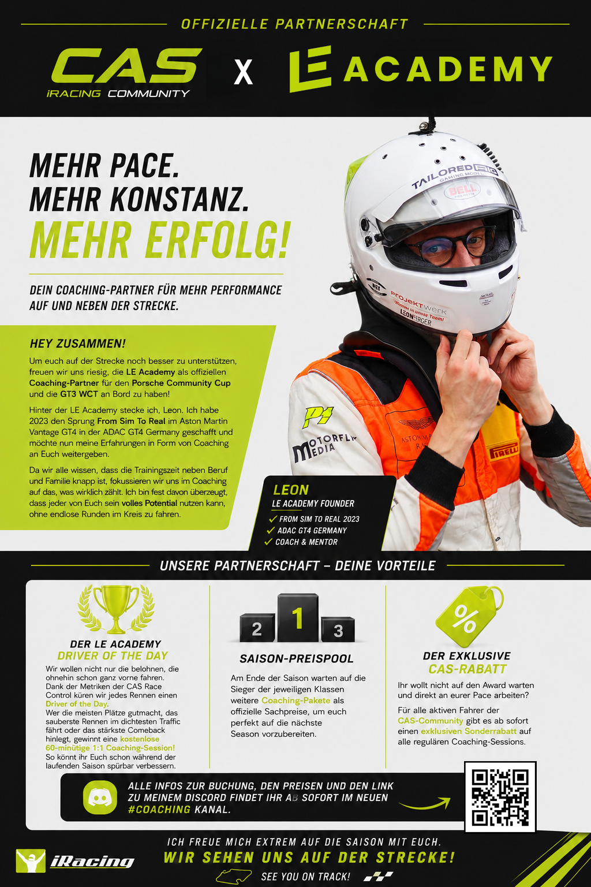

🤝 Offizielle Partnerschaft: CAS × LE Academy
Mehr Pace. Mehr Konstanz. Mehr Erfolg — unser neuer Coaching-Partner für den Porsche Community Cup & die GT3 WCT

Wir freuen uns riesig, die LE Academy als offiziellen Coaching-Partner der CAS Community für den Porsche Community Cup und die GT3 WCT an Bord zu haben. Hinter der LE Academy steckt Leon, der 2023 den Sprung From Sim To Real im Aston Martin Vantage GT4 in der ADAC GT4 Germany geschafft hat — und nun seine Erfahrung an Euch weitergibt.
Da die Trainingszeit neben Beruf und Familie knapp ist, fokussiert sich das Coaching auf das, was wirklich zählt: schneller werden, ohne endlose Runden im Kreis zu fahren. Das Ziel — jeder Fahrer kann sein volles Potenzial nutzen.
🏆 LE Academy Driver of the Day
Dank der Metriken der CAS Race Control küren wir jedes Rennen einen Driver of the Day. Wer die meisten Plätze gutmacht, das sauberste Rennen im dichtesten Traffic fährt oder das stärkste Comeback hinlegt, gewinnt eine kostenlose 60-minütige 1:1-Coaching-Session — so verbessert Ihr Euch spürbar während der laufenden Saison.
🥇 Saison-Preispool
Am Ende der Saison warten auf die Sieger der jeweiligen Klassen weitere Coaching-Pakete als offizielle Sachpreise — um Euch perfekt auf die nächste Saison vorzubereiten.
🏷️ Der exklusive CAS-Rabatt
Ihr wollt nicht auf den Award warten und direkt an eurer Pace arbeiten? Für alle aktiven Fahrer der CAS-Community gibt es ab sofort einen exklusiven Sonderrabatt auf alle regulären Coaching-Sessions.
🏆 So wird der Driver of the Day ermittelt
Der Driver of the Day wird nach dem Rennen automatisch aus dem Race-Log bestimmt — und zwar bewusst nicht einfach der Rennsieger. Bewertet wird die beste Fahrt, nicht die beste Startposition.
In die Wertung fließen vier Kriterien ein, jeweils gewichtet:
- Gewonnene Positionen (Start → Ziel) — höchste Gewichtung (40 %)
- Aufholjagd / Recovery — wie weit sich ein Fahrer von seinem schlechtesten Punkt im Rennen wieder nach vorne gekämpft hat (20 %)
- Überholmanöver auf der Strecke (25 %)
- Sauberes Fahren — je weniger Incidents, desto besser (15 %)
Jedes Kriterium wird über das gesamte Feld normiert (vom schwächsten bis zum stärksten Wert), dann gewichtet zusammengezählt. Der Fahrer mit der höchsten Gesamtpunktzahl gewinnt.
Der Clou: Ein sauberer Start-Ziel-Sieg von der Pole bringt bei „gewonnenen Positionen“, „Aufholjagd“ und „Überholmanövern“ fast null Punkte — deshalb gewinnt fast immer derjenige, der sich durchs Feld nach vorne gearbeitet hat, und nicht der Rennsieger. Der Sieger kann den Titel trotzdem holen, aber nur, wenn er ihn sich wirklich verdient hat (z. B. Sieg aus dem hinteren Feld).
🏁 Leon Erger — From Sim To Real
Leon Erger (25) aus der Nähe von Köln begann seine Sim-Racing-Reise 2020 mit einem Ziel: sein Können auf einer echten Rennstrecke zu beweisen. Nach unzähligen Stunden im Sim — ergänzt durch Bücher, Training im Fitnessstudio und das Studieren von Onboards — fuhr er seinen allerersten Trackday in einem echten Rennwagen und unterbot bereits in Runde 10 die Zeit seines Coaches, eines Rennfahrers mit über zwei Jahrzehnten Erfahrung. Seine Lehre daraus: From Sim To Real ist möglich — und harte Arbeit schlägt Talent jedes Mal.
2023 lebte er den Traum und fuhr den Aston Martin Vantage GT4 in der ADAC GT4 Germany — allgemein als Sprungbrett zur DTM und eine der wettbewerbsstärksten GT4-Serien der Welt angesehen — wo er die Top 10 erreichte.
Er gründete die LE Academy, um Fahrern wie Euch zu helfen, Ready to Race zu werden: Schluss mit Raten, jetzt wird besser gefahren. Da er selbst vom Anfänger zum Top-10-Fahrer in einer Weltklasse-GT4-Meisterschaft wurde, kennt er den Weg aus eigener Erfahrung und konzentriert sich auf den Kern dessen, was Euch wirklich schneller macht — ganz ohne Hunderte ziellose Runden.
🏃 Über die CAS Community
Wo Leidenschaft auf Technologie trifft — ein Zuhause für iRacing-Enthusiasten
Willkommen bei CAS
Die CAS-iRacing Community ist ein einladender Ort für Sim-Racer aller Erfahrungsstufen. Egal ob du gerade erst mit iRacing anfängst oder ein erfahrener Rennfahrer bist — CAS bietet eine unterstützende Umgebung, um dein Fahren zu verbessern und Gleichgesinnte zu treffen.
cas-community.comInklusiv & Respektvoll
CAS legt Wert auf eine offene, nicht-elitäre Atmosphäre. Die Community setzt auf gegenseitige Unterstützung, faires Racing und Hilfe für schwächere Fahrer. Aggressives und respektloses Verhalten wird nicht toleriert — sauberes Racing und Sportlichkeit stehen an erster Stelle.
GrundwerteGegründet von Andreas Wuschnakowski
Seit 2021 aktiv im Sim-Racing, gründete Andreas CAS aus dem Wunsch heraus, eine bessere Community-Erfahrung für Einsteiger zu schaffen. Seine eigenen frühen Erfahrungen inspirierten den einladenden und unterstützenden Ansatz der Community.
Seit 2021🏁 Ligen & Serien
Gut organisierte Ligen und Einzelevents — nah am echten Motorsport
GT3 – WCT (World Championship Tour)
Die Flaggschiff-GT3-Serie der CAS Community. Fahre die besten GT3-Rennwagen der Welt in einer professionell organisierten Meisterschaft, die die Spannung des echten GT3-Rennsports nachbildet.
DetailsIEC – International Endurance Championship
Langstreckenrennen vom Feinsten. Schließe dich mit anderen Community-Mitgliedern zusammen für längere Rennen, die Konstanz, Strategie und Fahrermanagement testen. Ein echter Test für Teamwork.
Neu für die nächste Saison: Die IEC setzt auf iRaceControl für professionelles Rennmanagement — Live-Tracking, automatisierte Rennleitung, Incident-Logging und PDF-Rennberichte.
Wertungsregel: Teams müssen mindestens 90% der Renndistanz absolvieren, um Meisterschaftspunkte zu erhalten. Teams unterhalb der 90%-Schwelle werden gewertet, erhalten aber keine Punkte.
DetailsCombined Cup Pausiert
Ein rotierendes Einklassen-Format — jede Woche ein komplett anderes Auto. Die aktuelle Saison rotiert durch drei grundverschiedene Fahrzeuge: Radical, Ray FF1600 und einen TCR-Tourenwagen. Diese Mischung — High-Downforce-Prototyp, leichter Open-Wheeler und frontgetriebener Tourenwagen — macht den Combined Cup zu einer der anspruchsvollsten Serien der Community: Bremspunkte, Balance und Fahrstil müssen Woche für Woche neu gelernt werden. Kein Multiclass-Rennen.
Saison pausiert: Nach Lauf 4 wurde die 10. Saison des Combined Cup wegen zu geringer Beteiligung der angemeldeten Mitglieder pausiert. Die Ergebnisse der Läufe 1–4 bleiben unten dokumentiert. Eine Rückkehr in einer späteren Saison ist möglich — aktuelle Infos auf den Kanälen der CAS Community.
DetailsSFL Cup
Der SFL Cup bietet eine weitere wettbewerbsfähige Serie innerhalb der CAS Community. Regelmäßige Rennen mit Fokus auf sauberes, kompetitives Racing in einem gut strukturierten Meisterschaftsformat.
DetailsPCCD – Porsche Community Cup Deutschland
Markenpokal-Racing mit dem Porsche 911 GT3 Cup. Eine tolle Serie für enge, spannende Rennen, bei denen das Fahrkönnen den Unterschied macht statt Setup-Vorteile.
DetailsTSS – GT4
GT4-Racing in der CAS Community. Diese etwas langsameren, aber wendigen Fahrzeuge bieten einen fantastischen Einstiegspunkt für Fahrer, die in organisiertes Ligaracing einsteigen möchten.
Details🏁 PCCD Saison 5, Lauf 7 — Algarve (Portimão)
Ein Sieg für jeden, 76 Punkte für jeden: Becker gewann den Heat nach einer Berührung mit Grossenbacher in der letzten Runde, Grossenbacher konterte im Feature von Startplatz sieben — und der Titel wird am Hungaroring entschieden, zwei Punkte auseinander
🏆 Becker, Grossenbacher, Oberländer
🥇 Maurice Becker
🥈 Remo Grossenbacher
🥉 Klaus Oberländer
Pole 1:42.050 mit 0,455 s · Grossenbacher führte 13 von 15 Runden · entschieden durch Berührung in der letzten Runde · Sieg mit 1,948 s · schnellste Runde Becker 1:41.988
🏆 Grossenbacher, Becker, Oberländer
🥇 Remo Grossenbacher
🥈 Maurice Becker
🥉 Klaus Oberländer
Umgedrehtes Feld · in Runde 1 von P7 an die Spitze · alle 15 Runden geführt · Sieg mit 0,593 s vor Becker, der als Letzter gestartet war · schnellste Runde Becker 1:42.195
🏁 Maurice Becker — Wertung 0,784
Der Heat-Sieg und im Feature vom letzten auf den zweiten Platz: Achter im umgedrehten Feld, Zweiter nach Runde 1, dann eine 14 Runden lange Jagd, die am Ende sechs Zehntel zu kurz war. Laut CLS sieben Überholmanöver an diesem Abend — und, wie er selbst zugibt, die Berührung, die Rennen 1 entschied.
Lauf nach Gesamtpunkten: Grossenbacher 76 · Becker 76 · Oberländer 60 · Finale: Hungaroring, 22. Oktober
📋 Vollständiger Rennbericht
Ausgangslage
Das Autódromo Internacional do Algarve oberhalb von Portimão wurde 2008 in sieben Monaten für rund 195 Millionen Euro gebaut. Wegen seiner blinden Kuppen, steilen Gefälle und Bremszonen, die mitten im Bergabstück beginnen, heisst es Achterbahn. 2020 war die Formel 1 hier zu Gast, und Lewis Hamilton holte seinen Rekordsieg Nummer 92. Für den Porsche Cup war es der vorletzte Lauf der Saison 5. Es war trocken bei rund 20 °C, und das Feature fuhr aus der Dämmerung in die völlige Dunkelheit.
Wieder standen acht Autos am Start, bei 27 für die Saison gemeldeten Fahrern. Darunter war ein Neuling: Moritz Reiniger, ein Schweizer, den Remo Grossenbacher überredet hatte und der für dasselbe Team fährt, Big Point Racing. Er loggte sich erst Sekunden vor dem Qualifying ein. Gefahren wurden zwei Sprints über 15 Runden mit stehendem Start und ohne Safety Car. Die Stärke des Feldes lag bei 2142.
Qualifying
Gefahren wurde Lone Qualifying mit drei Runden pro Fahrer. Maurice Becker begann mit einer 1:42.5 und steigerte sich in seiner letzten Runde auf 1:42.050 und damit auf die Pole. Remo Grossenbacher hatte fast die ganze Session über keine gültige Zeit. Erst in der letzten Runde gelang ihm eine 1:42.505, das reichte für Platz zwei mit 0,455 s Rückstand. Klaus Oberländer wurde Dritter (1:43.240), Reiniger in seiner allerersten CAS-Session Vierter (1:43.812). Dahinter folgten Jan Tobias Schrader (1:44.922), Antonio Cursio (1:46.587) und Jürgen Michael Kraft (1:48.708). Mario A Berger blieb ohne gültige Runde, sammelte in der Session sieben Incident-Punkte und startete von ganz hinten.
Rennen 1 — Heat, 15 Runden, stehender Start
Grossenbacher setzte sich in der ersten Runde gegen Becker durch und hielt ihn danach fast das ganze Rennen hinter sich. Von Runde 2 bis Runde 14 betrug der Abstand nie mehr als sechs Zehntel, meist nur ein oder zwei. Becker versuchte es immer wieder aussen, Grossenbacher hielt die Innenlinie und liess ihm keine Lücke. Ihre Rundenzeiten lagen fast gleichauf im niedrigen 1:42er-Bereich. Becker fuhr in Runde 5 die schnellste Rennrunde, eine 1:41.988. Oberländer, allein auf Platz drei, verlor rund eine Sekunde pro Runde auf die beiden.
Im Mittelfeld ging es bewegter zu. Reiniger ging früh an Oberländer vorbei. Laut Kommentar gab er ihm dabei „leicht von hinten ein bisschen“. Dann drehte er sich in Runde 2 ohne Fremdeinwirkung und fiel auf Platz sieben zurück. Bis Runde 8 kämpfte er sich auf Platz fünf zurück, den letzten Platz davon holte er sich von Cursio. Schrader nahm Cursio in Runde 4 Platz vier ab, als der Italiener weit wurde; der Kommentar nannte das ein sauberes Manöver. Berger drehte sich in Runde 5 beim Versuch, Cursio zu überholen, ohne Fremdeinwirkung.
Entschieden wurde das Rennen in der letzten Runde. Becker sass Grossenbacher immer noch im Nacken, als sich die beiden berührten und Grossenbacher sich drehte. Die Telemetrie verzeichnet im selben Moment für beide einen Kontrollverlust mit je zwei Incident-Punkten, und beide verloren in dieser Runde rund sieben Sekunden. Becker kam als Erster wieder in Fahrt und überquerte die Linie 1,948 s vorn. Grossenbacher blieb Zweiter, weil Oberländer 15 Sekunden zurücklag. Die Einschätzung aus der Kabine, live: „Ich hätte jetzt gesagt, zum Eifer des Gefechts war es wahrscheinlich, hat der Mauris den Remo umgedreht.“ Gleich danach hiess es: „Es war keine Absicht, das ist klar.“ Das CLS führt für diesen Lauf keine Strafe.
Ergebnis Rennen 1: Becker, Grossenbacher, Oberländer, Schrader, Reiniger, Cursio, Berger, Kraft. Schnellste Runde: Maurice Becker, 1:41.988.
Rennen 2 — Feature, 15 Runden, umgedrehtes Feld
Bei acht Autos drehte die Top-8-Regel das ganze Feld um. Kraft stand auf der Pole, Berger daneben, Grossenbacher und Becker in der letzten Reihe. Kraft kam gut weg, doch Berger war fast sofort vorbei, nahm dann einen Randstein viel zu hart mit und wurde ausgehebelt. In den folgenden Sekunden verzeichnet die Telemetrie zwei getrennte Kontakte: Berger mit Cursio, dann Reiniger, Becker und Oberländer gemeinsam, wobei Reiniger sich drehte. Keiner davon war klar im Bild, und dieser Bericht ordnet sie niemandem zu. Auch Kraft geriet in eine Berührung, rollte rückwärts und stand am Ende von Runde 1 dreieinhalb Minuten an der Box. Er fuhr wieder hinaus und kam mit zwei Runden Rückstand ins Ziel.
Als das Feld zurückkam, führte Grossenbacher von Startplatz sieben, und Becker war von Startplatz acht schon Zweiter. Selbst der Kommentator konnte nicht sagen, wie das passiert war: „Ich weiß nicht, wie er das gemacht hat, dass der alle überholt hat.“ Danach wurde das Rennen zur Wiederholung des Heats mit vertauschten Rollen. Becker verkürzte von 2,3 s nach Runde 1 auf rund drei Zehntel in Runde 9 und hing in den letzten Runden ein, zwei Zehntel dahinter. Wieder fuhr er die schnellste Runde, eine 1:42.195. Grossenbacher hielt erneut die Innenlinie und machte keinen Fehler. In der letzten Runde scheiterte Beckers letzter Angriff an der Traktion, und im Ziel fehlten ihm 0,593 s. Grossenbacher führte jede einzelne Runde.
Dahinter lief ein Kampf zu viert, dem der Stream die meiste Zeit widmete. Oberländer ging in Runde 4 an Schrader vorbei; Schrader sagte später, er habe ihn vorbeigewunken. In Runde 8 holte sich Oberländer mit einem Manöver innen Platz drei von Cursio. Er glaubt, dass es in Kurve 1 „eine ganz kleine Berührung“ gab. Danach setzte er sich ab und fuhr in der letzten Runde seine beste Zeit des Abends, eine 1:42.889. Reiniger und Schrader tauschten mehrmals die Plätze. Reiniger kam in Runde 7 vorbei, Schrader konterte in Runde 8. Reiniger ging erneut vorbei, drehte sich dann in Runde 11 ohne Fremdeinwirkung und fiel auf Platz sechs zurück. In der letzten Runde bremste er Schrader aus, Schrader kam mit einer leichten Berührung zurück, und Reiniger ging beim Anbremsen innen wieder vorbei und holte Platz fünf. Er kam knapp eine Sekunde hinter Cursio ins Ziel, der Platz vier hielt, sein bestes Ergebnis an diesem Abend.
Berger sah in Runde 12 die schwarze Flagge, im selben Moment, in dem sein Incident-Konto 16 erreichte, und sass die Strafe in derselben Runde an der Box ab. Er wurde Siebter mit einer Runde Rückstand und 18 Incident-Punkten.
Ergebnis Rennen 2: Grossenbacher, Becker, Oberländer, Cursio, Reiniger, Schrader, Berger (+1 Runde), Kraft (+2 Runden). Schnellste Runde: Maurice Becker, 1:42.195.
Der Lauf
Nach Gesamtpunkten endete der Lauf unentschieden: Grossenbacher 76, Becker 76, dahinter Oberländer mit 60 Punkten für zweimal Platz drei, und Cursio, Schrader und Reiniger mit je 46. Berger holte 36 Punkte, Kraft 32. Die Incident-Spalten zeigen, wie unterschiedlich die beiden Spitzenleute dorthin kamen: Grossenbacher hatte 11 Punkte im Lauf, Becker 20. Reiniger hatte 21 und Berger 25, Kraft dagegen nur 3. Fahrer des Tages: Maurice Becker, Wertung 0,784, vor Grossenbacher, Schrader und Reiniger.
Nach dem Rennen
Vier der acht Fahrer kamen danach in den Stream, was der Kommentator einen Rekord nannte. Grossenbacher nahm den Heat gelassen: „Ich hatte glaube ich schon lange nicht mehr so viel Spaß beim Verteidigen.“ Zur Berührung selbst sagte er: „Ich bin der Meinung, ich habe nichts falsch gemacht. Maurice hat sich zumindest mal entschuldigt.“ Er wolle noch eine Nacht darüber schlafen, bevor er etwas entscheide, und betonte, dass er keine Absicht dahinter sehe.
Becker nahm die Schuld ohne Wenn und Aber auf sich: „Da wollte ich halt immer ein bisschen mehr und ein bisschen mehr, und dann ist es doch zu viel … geht auf meine Kappe.“ Im Feature sei er ruhiger gefahren und habe auf einen Fehler gewartet, der aber nie kam.
Oberländer, mit zweimal Platz drei mehr als zufrieden, fasste die beiden an der Spitze so zusammen: „Maurice und Remo, das sind zwei Aliens, die sind vom anderen Stern.“ Zu Cursios Lichthupe nach dem Überholmanöver im Feature: „Italiener, ein bisschen heißblütig, aber nie böse gemeint.“ Schrader erzählte, er sei die Strecke am Vortag zum ersten Mal gefahren und Cursio sei sehr schwer zu überholen gewesen. Reinigers Manöver fand er forsch, aber nicht böswillig.
Meisterschaft nach Lauf 7
Seit Donington haben die beiden exakt gleich gepunktet, je 76 in Zolder und an der Algarve. Der Abstand beträgt deshalb weiterhin zwei Punkte: Remo Grossenbacher 402, Maurice Becker 400. Mit grossem Abstand folgen Andre Brechmann (208, hier nicht am Start), Jan Tobias Schrader, der vier Plätze auf Rang vier gutmacht (206), und Alex Gründel (205). Danach kommen Antonio Cursio, fünf Plätze nach vorn (183), Dominique Meyers (182), Benedikt Barth (176), Mario A Berger (168) und Klaus Oberländer, vier Plätze nach vorn (162, punktgleich mit Benjamin Schlosser). Beide Titelanwärter sind sechs der sieben Läufe gefahren, und es gibt ein Streichergebnis. Das Finale am Hungaroring am 22. Oktober ist deshalb praktisch ein direktes Duell: Becker muss an diesem Abend mehr als zwei Punkte mehr holen als Grossenbacher.
Notizen aus der Kabine
- Kleines Feld, grosse Zweikämpfe: „Lieber sind acht Autos auf der Strecke und wir haben schöne Zweikämpfe als 20 und alle sind zwei, drei Sekunden voneinander weg.“ Neun Fahrer hatten zugesagt, fünf abgesagt und zwölf gar nicht geantwortet. Der Kommentator überlegt, mehr Teilnahmepunkte zu vergeben, um die Zahlen wieder zu steigern.
- Wird der Neuling gewertet? Im Stream blieb offen, ob Reiniger in dieser Saison zählt; das sollte mit Andreas besprochen werden. Inzwischen hat das CLS ihn gewertet: 46 Punkte, Platz 18 in der Tabelle.
- Die Schrader-Cam lief wieder als Bild-im-Bild aus Jan Tobias Schraders eigenem YouTube-Stream, nachdem sie erst neu geladen werden musste.
- Das Titelkampf-Overlay zeigte nach dem Feature einen falschen Abstand. Laut CLS sind es tatsächlich zwei Punkte.
- Ausblick auf Saison 6: Gezeigt wurde ein vorläufiger Kalender mit acht Läufen, darunter Summit Point, der Red Bull Ring, der Sachsenring, Barcelona, Montreal, Hockenheim und Laguna Seca. Alle Termine verschieben sich noch um eine Woche. Ausserdem bereitet Andreas eine lockere Fun-Liga mit offener Punktewertung und Abstimmung über die Strecken vor, die die NASCAR-Serie ersetzen soll.
- Als Richtwert für eine schnelle Runde nannte die Kabine eine 1:44.582 in einem älteren Cup-Porsche. Die beiden Spitzenfahrer waren fast zweieinhalb Sekunden schneller.
- Nächster und letzter Lauf: Hungaroring, Donnerstag, 22. Oktober 2026.
Zusammenfassung des CAS-Community-Twitch-Streams von Thomas Herbrig. Startaufstellungen, Rundenzeiten, Abstände, Führungsrunden und Incident-Punkte stammen aus dem iRacing-Eventergebnis (Subsession 89218906). Klassement, Laufpunkte, Meisterschaftstabelle und Fahrer des Tages kommen von CAS League Scoring (CLS). Positionen Runde für Runde, Boxenstopps, die schwarze Flagge und der zeitliche Ablauf der Incidents stammen aus der iCASControl-Telemetrieaufzeichnung. Wo der Stream nicht klären konnte, wer einen Zwischenfall verursacht hat, spekuliert dieser Bericht nicht.
🏁 PCCD Saison 5, Lauf 5 — Donington Park
Acht Autos, stehendes Wasser und ein Senna-Jubiläum: Maurice Becker gewann den Lauf und liegt jetzt nur noch zwei Punkte hinter der Tabellenspitze, während Benedikt Barth das Feature ohne einen einzigen Incident-Punkt gewann
🏆 Becker, Kremer, Barth
🥇 Maurice Becker
🥈 Jonas Kremer
🥉 Benedikt Barth
Pole mit 0,465 s · 15 von 16 Runden geführt · Sieg mit 11,651 s · schnellste Runde 1:36.889 · nur ein Incident-Punkt im ganzen Rennen
🏆 Barth, Becker, Schlosser
🥇 Benedikt Barth
🥈 Maurice Becker
🥉 Benjamin Schlosser
Komplett umgedrehtes Feld · von P6 aus die letzten neun Runden geführt · Sieg mit 2,884 s · null Incident-Punkte · schnellste Runde Becker 1:36.734
🏁 Maurice Becker — Merit 0,954
Im Heat von der Pole bis ins Ziel mit einem einzigen Incident-Punkt, dann in Runde 3 des Features ein selbst verschuldeter Fehler, der ihn ans Ende des Feldes warf — und zehn Überholmanöver, mit denen er sich bis zum Fallen der Flagge wieder auf Platz zwei zurückarbeitete, samt schnellster Runde des Abends.
Laufsieger nach Gesamtpunkten: Becker 76 · Barth 71 · Schlosser 56 · Nächster Lauf: Zolder, 24. September
📋 Vollständiger Rennbericht
Ausgangslage
Donington Park ist eine echte Berg-und-Tal-Strecke in den englischen Midlands, in den 1930er-Jahren rund um bereits bestehende Parkstrassen eröffnet, und die zwölf Kurven tragen bis heute ihre alten Namen — Redgate, die Craner Curves, die Esses, die Melbourne-Haarnadel, Goddards. Genau ein Formel-1-Rennen hat hier stattgefunden, 1993, und das ist bis heute für Ayrton Sennas erste Runde im Regen in Erinnerung. Dreiunddreissig Jahre später fand der Porsche Cup dasselbe Wetter vor: Regen vor der Session, stehendes Wasser auf mehreren Curbs, das Overlay meldete moderately wet, 19 °C Luft über 22,6 °C Streckentemperatur unter geschlossener Wolkendecke. Der Kommentator war die Strecke am Morgen selbst auf nahezu trockener Bahn gefahren und schätzte die Trockenpace auf 1:28er — rund neun bis zehn Sekunden pro Runde gingen ans Wasser.
Nur acht Fahrer gingen an den Start, nach fünfzehn in Oschersleben. Das Wetter war der naheliegende Grund; der Kommentator verwies zusätzlich auf das noch laufende iRacing-Update und darauf, dass ein Stammfahrer krank war. Strength of Field 2638. Zwei Sprints über je 16 Runden, stehende Starts, keine Safety-Car-Phasen, keine Strafen und den ganzen Abend kein Protest.
Qualifying
Lone Qualifying, drei Runden pro Fahrer. Maurice Becker arbeitete sich von 1:39.7 über 1:38.2 auf 1:37.756 herunter und holte die Pole, 0,465 s vor Benedikt Barth (1:38.221), der seine Zeit erst in der allerletzten Runde fand. Jonas Kremer lag auf seinem letzten Versuch sechs bis sieben Zehntel vorn und warf ihn weg — Dritter mit 1:38.764. Dahinter Don Utz (1:39.577), Andre Brechmann (1:40.802), Mario A Berger (1:41.170) und Jan Tobias Schrader (1:42.136). Benjamin Schlosser fuhr überhaupt keine Zeit — acht Incident-Punkte in der Session — und startete als Achter. Im Stream wurde die fehlende achte Zeit nie einem Fahrer zugeordnet; der Kommentator vermutete laut, sein eigenes Overlay habe eine Zeile verschluckt.
Rennen 1 — Heat, 16 Runden, stehender Start
Becker setzte die Pole sauber um und Kremer ging mit, doch die Curbs von Donington sammelten sofort die ersten Autos ein: Kremer verlor das Heck und fiel hinter Barth zurück, Don Utz blockierte in die Melbourne-Haarnadel und war innerhalb von drei Runden Letzter. Dann unterlief Becker sein einziger Fehler des Rennens — in Runde 6 zu spät gebremst und weit getragen — und Barth führte Runde 7. In Runde 8 holte sich Becker die Führung mit einem sauberen Innenmanöver zurück, und der Kommentator betonte ausdrücklich, dass Barth keinen Fehler gemacht hatte: er war schlicht ausgebremst worden.
Danach war es eine Kontrollfahrt: schnellste Runde 1:36.889 in Runde 10, ein Incident-Punkt im gesamten Rennen auf klatschnasser Strecke, 11,651 s Vorsprung im Ziel. Barth hielt Platz zwei bis Runde 13, verlor dann das Auto und musste Kremer vorbeilassen; im Ziel fehlten ihm 14,188 s. Die Fahrt des Rennens gehörte Benjamin Schlosser: keine Qualifying-Zeit, Startplatz acht, vier Überholmanöver und Rang vier im Ziel, dazu die zweitschnellste Runde des Rennens (1:37.205). Keines seiner Manöver kam ins Bild — der Kabine fiel erst das Ergebnis auf. Brechmann wurde Fünfter, Utz kämpfte sich auf Platz sechs zurück, Schrader wurde Siebter und Berger Achter.
Rennen 1, Top fünf: Becker, Kremer, Barth, Schlosser, Brechmann. Schnellste Runde: Maurice Becker, 1:36.889.
Rennen 2 — Feature, 16 Runden, komplett umgedrehtes Feld
Die vollständige Umkehr stellte Mario A Berger auf die Pole und Becker in die letzte Reihe. Jan Tobias Schrader führte von Startplatz zwei die Runden 1 und 2 und behauptete sich überzeugend. In Runde 3 passierten dann zwei Dinge. Schlosser bremste Brechmann aus und übernahm die Spitze, die er bis Runde 7 hielt — und dahinter kam Becker mit zwei Rädern auf das nasse Gras, bekam den Wagen nicht mehr verzögert und traf Schrader. Die Kabine bewertete es so, wie sie es sah — „Das war ein Rennunfall. Kann passieren.“ und „da würde ich wirklich keinerlei Absicht hinter vermuten“ — und Schrader sagte hinterher dasselbe. Becker kassierte drei Incident-Punkte und fiel ans Ende des Feldes; Schrader kassierte vier und Reifenschaden, kam am Ende von Runde 6 zu einer 26,6 s langen Reparatur an die Box, reihte sich eine halbe Minute zurück wieder ein und spielte keine Rolle mehr — im Ziel fehlten ihm 96,273 s.
Barth ging in Goddards an Kremer vorbei, zog an Schlosser vorbei und führte von Runde 8 bis ins Ziel — neun Runden vor einem Feld, das ihn nie wieder in Schlagdistanz hatte, und das bei null Incident-Punkten. Zur Rennmitte drehte sich Schlosser ohne Fremdeinwirkung, und Kremer ging beim Ausweichen daneben; der Kommentator las es so, dass der Dreher die Ursache war — mit seinem eigenen Vorbehalt „wenn ich das richtig erkannt habe“. Kremer erholte sich nicht mehr und wurde Sechster mit elf Incident-Punkten.
Die zweite Rennhälfte gehörte Beckers Aufholjagd: in Runde 4 noch Letzter, in Runde 13 schon Zweiter, zehn Überholmanöver darunter eines aussen herum an Schlosser, und die schnellste Runde des ganzen Abends — 1:36.734 in Runde 10. Im Ziel fehlten ihm 2,884 s auf Barth. Die stille Leistung kam von Don Utz: Vierter im Ziel bei null Incident-Punkten und einer besten Runde von 1:37.593 — auch sein Manöver gegen Brechmann um diesen Platz war nicht im Bild.
Rennen 2, Top fünf: Barth, Becker, Schlosser, Utz, Brechmann. Schnellste Runde: Maurice Becker, 1:36.734.
Der Lauf
Gesamtpunkte: Becker 76, Barth 71, Schlosser 56, Kremer 55, Utz 46, Brechmann 46, Berger 34, Schrader 34. Fahrer des Tages: Maurice Becker, Merit 0,954. Die Incident-Spalte erzählt die andere Hälfte der Geschichte — Barth drei über den ganzen Lauf, Utz vier, Berger vier, dagegen sechzehn bei Kremer und dreizehn bei Schrader.
Nach dem Rennen: Jan Tobias Schrader
Schrader kam nach dem Rennen dazu und bestätigte die Lesart der Kabine — er hatte Becker gerade durchwinken wollen, und der Einschlag traf ihn völlig unvorbereitet: „Und Maurice hätte ich eine Runde weiter durchgelassen. Und dann ist er mir reingeknallt und ich habe mich so erschrocken, weil ich da auch gar nicht mit gerechnet habe und schoss einmal übers Feld rüber.“ Zum Schaden: „Gut, und ja, also ich hatte seit Maurice, dank Maurice Schaden gehabt. Reifenschaden. Und ich hab gedacht, ich bleib aber draußen, solange ich fahren kann.“ Spät im Rennen drehte er sich beim Platzmachen für Becker in einer Wasserpfütze und blieb im Kies stehen — „Ich wollte ihn extra Platz machen und durch den Schaden und eine Wasserpfütze habe ich mich gedreht.“ — und stellte den Wagen trotzdem nicht ab: „Für mich ist natürlich immer klar, Rennen werden komplett zu Ende gefahren.“ Zum Schluss lobte er ausgerechnet den Mann, der ihn dorthin gebracht hatte: „Also ganz großes Lob an Maurice, also bis auf, dass er mich abgeschossen hat. Von der Pace super gefahren.“
Das Urteil der Kabine über den Sieger: „Und der Benedikt hat es super gemacht. Der ist fehlerfrei durchgefahren, das erste zweite Rennen und hat gewonnen. Während die anderen halt alle so kleine Fehler hatten, die schnellen Fahrer.“
Meisterschaft nach Lauf 5
Weder Remo Grossenbacher noch Alex Gründel waren in Donington am Start, und 76 Punkte an einem Abend haben die Tabelle auf den Kopf gestellt. Grossenbacher führt weiterhin mit 250 Punkten, doch Maurice Becker ist jetzt Zweiter mit 248 — ein Rückstand von zwei Punkten, wo es vor zwei Wochen noch 78 waren. Dahinter Gründel (205), Dominique Meyers (182), Benedikt Barth mit drei Plätzen Gewinn auf Rang fünf (176), Benjamin Schlosser (162), Willi Brand (159), Andre Brechmann (148), René Hollerung (138) und Jan Tobias Schrader (118). Drei Läufe stehen noch aus.
Notizen aus der Kabine
- Ein Feld von acht Autos hat auch sein Gutes, wie es der Kommentator formulierte: „man kann sagen, es ist überschaubar das Feld. Das macht es für mich etwas einfacher natürlich dem allem zu folgen.“
- Schrader-Cam: Der eigene YouTube-Stream von Jan Tobias Schrader lief als Bild-im-Bild mit. Er läuft ein paar Sekunden versetzt zum iRacing-Signal — die beiden kamen hinterher zum Schluss, dass Twitch und YouTube schlicht unterschiedliche Verzögerungen haben.
- Der Stream läuft wieder in 1080p, nachdem er beim letzten Mal auf 720p festhängen geblieben war, und der Mikrofonpegel wurde angehoben.
- Ausführlicher Hinweis auf den CLS Stint Planner, kostenlos für alle CLS- und Discord-Mitglieder: Die Insights-Diagramme von iRacing zur Pace nach iRating lassen sich direkt als Referenzzeiten für die Langstreckenplanung übernehmen.
- Neue PCCD-Saison, Anmeldung offen: Start am 22. September in Silverstone, und die Teilnahmepunkte werden künftig nicht mehr gestrichen — wer mehr als neun Rennen bestreitet, behält die PCP auch bei einem Streichresultat.
- Sonst bei CAS: SFL als Nächstes am 16. in Brands Hatch, IEC als Nächstes am 3. Oktober in Fuji, der Combined-Cup-Lauf in Navarra wegen des iRacing-Updates auf Freitag verschoben, und NASCAR am 18. September in Charlotte.
- Vier Momente, die die Kameras verpasst haben: Schlossers vier Manöver im Heat, Utz' Manöver gegen Brechmann um Platz vier im Feature, Barths Führungsübernahme im Feature — und die Frage, wer die fehlende Qualifying-Zeit hatte.
- Nächster Lauf: Zolder, Donnerstag, 24. September 2026 — der Kommentator wies darauf hin, dass er diesen Termin möglicherweise nicht streamen kann.
Zusammenfassung des CAS-Community-Twitch-Streams von Thomas Herbrig. Startaufstellungen, Rundenzeiten, Abstände und Incident-Punkte stammen aus dem iRacing-Eventergebnis (Subsession 88584369); Klassement, Laufpunkte und Fahrer des Tages kommen von CAS League Scoring (CLS); Positionen Runde für Runde, Überholmanöver, Boxenstopps und der zeitliche Ablauf der Incidents stammen aus der iCASControl-Telemetrieaufzeichnung. Wo der Stream nicht klären konnte, wer einen Zwischenfall verursacht hat, spekuliert dieser Bericht nicht.
🏁 IEC Saison 4, Lauf 1 — Sebring, 3 Stunden
Der Auftakt in die neue Multiclass-Ära: drei saubere Klassensiege, sechs defekte Wheelbases, ein abgestürzter Rennleitungsserver — und eine Korrektur, die das Ergebnis geradezieht
🏆 WS Racing, Aachen, WS Racing
🥇 WS Racing eSports LMP2 I
🥈 Alemannia Aachen White
🥉 WS Racing eSports LMP2 II
Pole Daniel Langehegermann 1:48.971 · 52 von 92 Runden geführt · Sieg mit 36,2 s · schnellste Runde Martin Spieler 1:49.021 · fünf von sechzehn Autos in der Führungsrunde
🏆 DaRoAn, NEON Blue, JuHa
🥇 DaRoAn
🥈 NEON Simsports Blue
🥉 JuHa Racing
Andre N Villela von Startplatz 4 der Klasse, allein im Auto, zwei Incident-Punkte in drei Stunden · Sieg mit 30,3 s · Pole Timo Elges 1:59.863 · schnellste Runde Michael Gasser 1:59.912
🏆 Aachen Yellow, CAS Blue, CAS Green
🥇 Alemannia Aachen Yellow
🥈 CAS-Tech Performance Blue
🥉 CAS-Tech Performance Green
Kevin Küpper von Startplatz 3 der Klasse · Sieg mit 30,2 s · schnellste Runde 2:01.469 · fünf Cup-Autos am Start, zwei in der Führungsrunde im Ziel · Don Utz Dritter, acht Runden zurück nach schwerem Schaden
🏁 TEAM OF THE DAY — Alemannia Aachen White
Benjamin Höft fuhr alle drei Stunden allein, startete nach verpatztem Qualifying als Dreizehnter von sechzehn in der LMP2 und kam als Zweiter der Klasse in der Führungsrunde ins Ziel — mit fünf Incident-Punkten, in einer Klasse, deren Schnitt bei über siebzehn lag. Vier Runden hat er dabei auch noch geführt.
📋 Vollständiger Rennbericht
Der Rahmen
Die International Endurance Championship geht in ihre vierte Saison — und zwar mit einem von Grund auf neuen Format. Sechs Läufe, drei Stunden statt sechs, Solo-Starter ausdrücklich erlaubt, Fahrer dürfen zwischen Teams ausgeliehen werden, um volle Startfelder zu bekommen. Und zum ersten Mal ein echtes Dreiklassenfeld: Dallara P217 LMP2, GT3 2025 und — anstelle der GT4-Klasse der Vorsaison — der Porsche 911 Cup (992.2). 37 Autos waren gemeldet, 90 Fahrer registriert, Strength of Field 2272.
Sebring International, 6,01 km und siebzehn Kurven aus Beton und geflicktem Asphalt, ist der härteste Auftakt, den sich diese Serie aussuchen konnte. Klar, 25 °C Luft über 31 °C Streckentemperatur. Der Sieger legte 92 Runden zurück, es gab zehn Führungswechsel und genau eine Gelbphase — und die hatte mit dem Geschehen auf der Strecke nichts zu tun.
Qualifying
Lone Qualifying. Daniel Langehegermann stellte WS Racing eSports LMP2 I mit 1:48.971 auf die Gesamtpole, keine zwei Zehntel vor Martin Spielers PWA E-Sports #BackFisch (1:49.146); Hendrik Stanzel (NEON Simsports Yellow, 1:49.467) und Timo Wulff (Jurassic Kart Racing T-Rex, 1:49.489) lagen innerhalb einer halben Sekunde. In der GT3 holte Timo Elges die Klassenpole für Jurassic Kart Racing Velociraptor mit 1:59.863 — als einziger GT3-Fahrer unter zwei Minuten — vor Michael Gasser (2:00.156) und NEON Simsports Blue (2:00.438). Im Porsche Cup war Thomas Kuebler mit CAS-Tech Performance Blue in 2:02.228 vorn.
Das Qualifying produzierte auch das erste Problem des Abends. Autos ohne gefahrene Zeit wurden ans Ende des Gesamtfeldes gestellt statt ans Ende ihrer Klasse, sodass ein LMP2 und ein GT3 hinter dem Porsche Cup standen. Rennleiter André bestätigte das live im Stream: „Das ist ein Fehler gewesen vom Server oder von den Einstellungen des Servers. Normalerweise sollten die innerhalb ihrer eigenen Klasse hinten starten.“ Die alte Regel, dass ein Fahrer ohne Zeit aus der Box starten muss, gibt es im aktuellen iRacing-Build nicht mehr.
Die erste Stunde
Der klassenweise Start war vorn sauber und hinten teuer. Im Porsche Cup drehte sich Bela Brünger (KEK Racing) und erwischte beim Zurücksetzen Thomas Herbrig, der gerade die Klassenführung geerbt hatte: „Ich habe jetzt gerade einen Meatball erwischt. Der ist mir reingefahren gerade … Er hat sich gedreht und ich wollte dann links an ihm vorbei.“ Herbrig verlor das Auto später selbst und musste die Veranstaltung wegen eines familiären Notfalls ganz abbrechen. Timmy Kaiser (Void Crown Racing), der höchstbewertete Fahrer im Feld, stellte seinen beschädigten LMP2 nach zwei Runden ab.
Dann fing die Hardware an aufzugeben. Andre Brechmann verlor am Lenkrad das Hoch- und Runterschalten; Andreas Leberer blieb im dritten Gang hängen und übergab CAS-Tech Endurance Black mitten im Stint an Johann Solowej: „Meine Shifter laufen gerade nicht mehr. Ich bin im dritten Gang hängen geblieben.“ Andreas in der Kabine: „Es scheint so eine Krankheit hier heute zu sein.“ Am Ende hatte der Chat sechs Wheelbase-Ausfälle gezählt, dazu Hubert Diethard, der aus dem DanKüchen-LMP2 immer wieder aus der Verbindung flog.
Der Absturz der Rennleitung
Nach rund zwei Dritteln Renndistanz erschien ein Full Course Yellow, ohne dass auf der Strecke irgendetwas dafür sprach. Andreas rief den Rennleiter live dazu, und André erklärte es unumwunden:
„Mein Rechner beziehungsweise iRacing ist abgestürzt. Und die Software für die Rennleitung, die läuft ja auf dem Rechner. Und als ich mich wieder eingeloggt habe, hat er alle Incidents auf einmal genommen, zusammengerechnet und hatte dadurch diese gelbe Flagge ausgelöst. Plus schwarze Flaggen — aber die schwarzen Flaggen habe ich wieder entfernt. Aber die Yellow Flag, die kann ich nicht entfernen.“
iRacing und die Rennleitungssoftware liefen auf derselben Maschine. Als beide wieder hochkamen, zählte die Software die Incidents jedes Autos von null neu und addierte sie zu dem, was sie bereits hatte — sie verdoppelte sie faktisch. Sieben schwarze Flaggen gingen innerhalb von neun Sekunden raus, 24 weitere folgten bis zur Zielflagge. André löschte die Flaggen so schnell er konnte, aber eine bereits gefahrene Durchfahrt lässt sich nicht zurücknehmen, und das Full Course Yellow liess sich gar nicht abbrechen. Drei Runden hinter dem Pace Car bei geschlossener Boxengasse, dann ein Restart in einer Reihe — und genau dort sortierte sich die LMP2 zum WS-Racing-Doppel um. Im Stream wurde eine Wiederholung des ganzen Rennens offen diskutiert. „Das erste Rennen darf ja auch mal was schieflaufen“, sagte André.
LMP2
WS Racing eSports LMP2 I führte 52 der 92 Runden und gewann das sauber — Langehegermann und Fabian Buhl teilten sich das Auto, drei Incident-Punkte zu zweit über das ganze Rennen, 36,2 s Vorsprung im Ziel. Dahinter entstand die Fahrt des Abends: Benjamin Höft, drei Stunden allein im Alemannia-Aachen-White-Auto, von Startplatz 13 der Klasse auf Platz zwei, unterwegs vier Runden in Führung. WS Racing LMP2 II komplettierte das Podium mit Florian Eigner, der in der Schlussrunde beim Angriff auf Platz zwei das Auto verlor und Dritter blieb.
Hendrik Stanzel (NEON Simsports Yellow) fuhr lange vorne mit — 22 geführte Runden, mehr als jeder ausser dem Sieger — bevor das Auto von seiner Incident-Bilanz eingeholt wurde. Martin Spieler fuhr mit 1:49.021 die schnellste Runde des gesamten Rennens und wurde Vierter. Manfred Baar brachte den DanKüchen-Wagen auf Platz fünf, nachdem die Verbindungsprobleme seines Teamkollegen die Rennmitte ruiniert hatten.
GT3
Die GT3 entschied sich durch Ausfälle an der Spitze. Michael Gasser (Flying Arrow Racing, solo im McLaren) führte weit über eine Stunde und fuhr mit 1:59.912 die schnellste Klassenrunde, kassierte dann eine schwarze Flagge für gesammelte Track Limits, fiel auf Rang drei zurück, berührte sich beim Konter mit Matthias Eggert, drehte sich, brauchte den Abschleppdienst und schied nach 57 Runden aus. Pole-Setter Timo Elges kam nach eigenen Problemen als Zwölfter der Klasse ins Ziel.
Blieb Andre N Villela, allein im DaRoAn-Acura, der tat, was er immer tut: nichts Spektakuläres. Startplatz vier der Klasse, Sieg mit 30,3 s Vorsprung und zwei Incident-Punkten in drei Stunden — der niedrigste Wert aller Autos im Rennen. NEON Simsports Blue (Jens Krämer und Justin Christiansen) wurde Zweiter. Um den letzten Podestplatz setzte sich JuHa Racing durch: Jozef-Frederik Suto hielt Christoph Kiesels WS-Racing-Mustang hinter sich, nachdem beide nach ihrer eigenen Berührung schwarze Flaggen bekommen hatten.
Porsche Cup
Nur fünf Cup-Autos starteten, nur zwei sahen die Zielflagge in der Klassen-Führungsrunde. Kevin Küpper (Alemannia Aachen Yellow) und Antonio Cursio (CAS-Tech Performance Blue) tauschten die Klassenführung mehrfach in einem wirklich sauberen Duell, samt Küppers Manöver in Kurve eins und Cursios sofortiger Antwort. Küpper setzte sich schliesslich ab und gewann mit 30,2 s und der schnellsten Klassenrunde (2:01.469); Thomas Kuebler brachte das CAS-Tech-Auto nach der Übernahme von Cursio als Zweiter ins Ziel.
Eine Fussnote gehört Don Utz. Beim Platzmachen für einen LMP2 wurde er so hart getroffen, dass ein Hinterrad blockierte; nach sehr langer Reparatur kam er wieder raus und wurde Dritter der Klasse, acht Runden zurück. Genau solche Ergebnisse soll das Dreistundenformat belohnen.
Nach dem Rennen: die Korrektur der Strafen
Die Sportkommissare haben das Rennen nicht wiederholt, sondern rekonstruiert. Auf Basis des offiziellen iRacing-Ergebnisses, der Race-Logger-Aufzeichnung, eines kompletten Replay-Durchlaufs, des Stream-Transkripts und einer unabhängigen Auswertung von Johann Solowej wurde für jedes Auto festgestellt, wie viele Durchfahrten sein endgültiger, offizieller Incident-Stand tatsächlich rechtfertigte und wie viele es gefahren ist. Zwei getrennt voneinander erstellte Auswertungen kamen auf dieselbe Zahl.
Acht Autos sind eine Durchfahrt zu viel gefahren — #42 GoSquadra, #98 JuHa Racing, #169 Jurassic Kart Racing T-Rex, #18 NEON Orange, #13 NEON White, #19 NEON Yellow, #3 Pure Performance 2 und #146 WS Racing GT3 I — und bekamen je 13 Sekunden gutgeschrieben, den gemessenen Wert einer Durchfahrt in Sebring über alle drei Klassen. Dieselbe Regel galt umgekehrt: #1 Dat muss Kesseln! beendete das Rennen mit 25 Incidents, schuldete damit eine Durchfahrt und hat sie nie abgeleistet — 13 Sekunden Aufschlag. Wer eine unberechtigte schwarze Flagge schlicht ignoriert hat, verlor keine Zeit und bekam folglich auch nichts gutgeschrieben. Zwei schwarze Flaggen mit anderer Ursache — Unsafe Pit Entrance und Closing Pit Penalty — blieben aussen vor.
Die Auswirkung auf die Wertung sind exakt zwei Positionen: In der LMP2 rückt Jurassic Kart Racing T-Rex auf Platz acht vor, NEON Simsports #62 fällt auf neun zurück. Alles andere bleibt, wie es gefahren wurde. Die vollständige Bilanz je Auto wurde den Teams vor der Veröffentlichung zugänglich gemacht, und das korrigierte Ergebnis wurde von André, Andreas und Johann geprüft, bevor es live ging.
Meisterschaft nach Lauf 1
LMP2: WS Racing eSports LMP2 I 107, Alemannia Aachen White 97, WS Racing eSports LMP2 II 87, PWA E-Sports #BackFisch 79, DanKüchen Motorsport 77.
GT3: DaRoAn 107, NEON Simsports Blue 97, JuHa Racing 86, WS Racing eSports GT3 I 81, WS Racing eSports GT3 II 77.
Porsche Cup: Alemannia Aachen Yellow 106, CAS-Tech Performance Blue 97, CAS-Tech Performance Green 86.
Notizen aus der Kabine
- Der Porsche Cup fährt in dieser Serie ohne BOP — „Den müsst ihr so schlagen“ — während der LMP2 rund 50–60 PS mehr und 30 kg weniger mitbringt als in der Vorsaison.
- Solo-Starter sind ausdrücklich erlaubt, Fahrer dürfen zwischen Teams ausgeliehen werden; gewertet wird ausschliesslich das Team.
- Preisgeld in iRacing-Credits für die ersten drei, Mindestteilnahme sieben Rennen, dazu die Gentleman Driver Challenge.
- Proteste sind während der Cooldown-Phase nach dem Rennen möglich.
- Die Race-Logger-Aufzeichnung hinter diesem Bericht stammt aus demselben iCASControl-Toolset, das die Liga live einsetzt; die für Sebring ergänzte Incident-Punkte-Erfassung hat die Rekonstruktion der Strafen überhaupt erst möglich gemacht.
- Nächster Lauf: Fuji International Speedway, Samstag, 3. Oktober 2026, drei Stunden.
Zusammenfassung des CAS-Community-Twitch-Streams von Thomas Herbrig. Startaufstellung, Rundenzeiten, geführte Runden und Incident-Punkte stammen aus dem iRacing-Eventresult (Subsession 88492179); Wertung, Meisterschaftspunkte und Team of the Day kommen aus dem CAS League Scoring (CLS) und enthalten die Strafkorrektur der Rennleitung; die Rekonstruktion der Strafen und die Durchfahrtszeiten basieren auf der iCASControl-Race-Logger-Aufzeichnung. Wo der Stream nicht klären konnte, wer einen Unfall verursacht hat, spekuliert dieser Bericht nicht.
🏁 PCCD Saison 5, Lauf 4 — Oschersleben
Saisonhalbzeit: Maurice Becker gewann den Lauf, Remo Grossenbacher übernahm die Tabellenführung, und eine Stallregie entschied das Feature
🏆 Becker, Brand, Grossenbacher
🥇 Maurice Becker
🥈 Willi Brand
🥉 Remo Grossenbacher
Pole mit sechs Zehnteln · alle 18 Runden geführt · Sieg mit 7,428 s · schnellste Runde 1:24.311 · Brand Zweiter mit einem einzigen Incident-Punkt
🏆 Grossenbacher, Becker, Hollerung
🥇 Remo Grossenbacher
🥈 Maurice Becker
🥉 René Hollerung
Reverse-Grid Top 8 · von P6, 11 Runden geführt · Sieg mit 9,157 s · schnellste Runde Becker 1:24.386 · Reverse-Pole-Setter Baar mit Frühstart
🏁 Mario A Berger — Merit 0,965
Acht gutgemachte Plätze über den Lauf, neun zurückerkämpfte Positionen, elf Überholmanöver und nur fünf Incident-Punkte — die sauberste Aufholjagd an einem Abend, an dem fast alle anderen Schaden einsammelten.
Laufsieger nach Gesamtpunkten: Becker 76 · Grossenbacher 71 · Brand 61 · Nächster Lauf: Donington Park, 10. September
📋 Vollständiger Rennbericht
Ausgangslage
Lauf 4 brachte den Porsche Cup zurück nach Deutschland — und zur Saisonhalbzeit: vier Läufe absolviert, vier stehen aus. Die Motorsport Arena Oschersleben ist ein 3,7 km langer Kurs mit 14 Kurven in Sachsen-Anhalt, und sie erwies sich als Strecke, auf der eng gefahren, aber kaum überholt wurde. Zwei Stellen prägten den Abend: die Schikane, der einzige Ort, an dem man wirklich längsseits kam — praktisch jedes Überholmanöver begann dort — und die schnelle Rechtskurve unmittelbar danach, in der eine ganze Reihe von Fahrern beim Herausbeschleunigen das Heck verlor. Fünfzehn Fahrer gingen an den Start, nach nur zehn in Oran Park. Trocken und klar, rund 21 °C, je 18 Runden.
Qualifying
Lone Qualifying, drei Runden pro Fahrer — und Maurice Becker war eine Klasse für sich: 1:24.244, sechs Zehntel vor Willi Brand (1:24.845). Dahinter Benjamin Schlosser (1:25.139), Andre Brechmann (1:25.236), Dominique Meyers (1:25.262), Remo Grossenbacher (1:25.416) und René Hollerung (1:25.507). Christian Schlosser fuhr keine Zeit und startete als Fünfzehnter.
Rennen 1 — Heat, 18 Runden, stehender Start
Becker hielt in Kurve 1 die Innenbahn gegen Brands Versuch außen herum, und damit war die Sache entschieden: alle 18 Runden geführt, schnellste Rennrunde, 7,428 s Vorsprung. Eine bewusst kontrollierte Fahrt — die Regie las sie als direkte Antwort auf Oran Park, wo er beide Rennen weggeworfen hatte. Brand folgte ihm mit einem Incident-Punkt ins Ziel; Grossenbacher kam von sechs auf drei, Hollerung von sieben auf vier. Das eigentliche Rennen lief im Mittelfeld und lieferte das Duell des Abends: Jan Tobias Schrader gegen Antonio Cursio um Platz acht, Runde um Runde, mit dem klar schnelleren Auto dahinter. Schrader lag an der Schikane immer wieder längsseits, Cursio machte jedes Mal zu — so konsequent, dass die Regie es hart, streckenweise zu hart nannte. Fünf Hundertstel trennten sie im Ziel. Manfred Baar lieferte die Aufholjagd des Rennens: in Runde 1 vier Plätze verloren und kurz Letzter, danach zurück auf acht. Dahinter forderte die Strecke ihren Tribut: Christian Schlosser drehte sich nach Berührung und verlor acht Minuten an der Box, Danny Platzer nahm 24,7 s Reparatur und kam mit einer Runde Rückstand und 13 Incident-Punkten ins Ziel, und Benjamin Schlosser landete spät in der Mauer, wurde aber noch Siebter.
Top 5 Rennen 1: Becker, Brand, Grossenbacher, Hollerung, Brechmann. Schnellste Runde: Maurice Becker, 1:24.311.
Rennen 2 — Feature, 18 Runden, Reverse-Grid Top 8
Die Umkehr stellte Manfred Baar auf die Pole und schickte Becker auf acht — und Baar startete zu früh. Die schwarze Flagge kam Sekunden nach Grün, die Durchfahrtsstrafe beendete sein Rennen als Wettkampf noch in Runde 1; Dominique Meyers wurde im selben Moment schwarz beflaggt und saß ebenfalls in Runde 1 ab. In derselben ersten Runde kamen sich Baar und Antonio Cursio ins Gehege, Cursio schlug frontal in die Mauer ein und brauchte 85 Sekunden Reparatur. Benjamin Schlosser führte das erste Renndrittel von Startplatz zwei und wirkte dabei völlig sicher — dann verlor er ohne jede Fremdeinwirkung das Heck und überließ die Spitze Remo Grossenbacher. Platz zwei entschied eine Teamentscheidung: Hollerung, Grossenbachers Teamkollege bei Big Point Racing, sah, dass der Schweizer schneller war, und ließ ihn vorbei, statt ihn aufzuhalten. Grossenbacher lag im Ziel neun Sekunden vorn. Hollerung verteidigte danach Platz zwei über viele Runden hervorragend gegen Maurice Becker — Becker in mehreren Kurven sichtbar schneller und trotzdem chancenlos —, bis er wenige Minuten vor Schluss zu weit hinauskam und sich selbst herausdrehte. Klaus Oberländer zerstörte seinen Wagen in der Kurve nach der Schikane, Aus in Runde 12; Christian Schlosser gab nach 13 Runden auf.
Top 5 Rennen 2: Grossenbacher, Becker, Hollerung, Brand, Brechmann. Schnellste Runde: Maurice Becker, 1:24.386. Driver of the Day (Lauf): Mario A Berger, Merit 0,965.
Meisterschaft nach Lauf 4
Remo Grossenbacher hat die Führung übernommen — 250 Punkte vor Alex Gründel (205), der in Oschersleben nicht am Start war. Genau dafür gibt es das eine Streichresultat der Saison. Dahinter Dominique Meyers (182), Maurice Becker (172), Willi Brand (159) und René Hollerung (138). Vier Läufe sind gefahren, vier stehen aus.
Nach dem Rennen: Jan Tobias Schrader
Schrader kam in den Stream und klärte die Szene auf, über die die Regie gerätselt hatte — die Stelle im Feature, an der er plötzlich eine ganze Gruppe vorbeiließ. Es war keine Slowdown-Strafe: „Nein, hatte ich nicht. Ich bekam ein bisschen Rutschen ins Dreck. Ich hab den Wagen aber gefangen. Und dann sind die an mir vorbeigefahren.“ Zu seinem langen Heat-Duell mit Cursio: „Ich war ein gutes Stück schneller, aber rankommen und vorbeifahren sind zwei verschiedene Paar Schuhe, und ich wollte mich natürlich nicht irgendwo vorbeidrücken.“ Er beschreibt sich als defensiven Fahrer — „wenn es nicht geht, geht nicht“ — und führte sein Ergebnis darauf zurück, die Strecke nicht trainiert zu haben.
Notizen aus dem Stream
- Das Feld wuchs nach dem Zehn-Auto-Tief von Oran Park wieder auf fünfzehn Starter.
- Oschersleben kann man in echt mieten — rund 50 € für zwanzig Minuten mit dem eigenen Auto, im Stream gleich als Idee für ein künftiges Community-Treffen mitgedacht.
- Calapex kam zur Sprache: Maurice Beckers neue Plattform zur Organisation von Team-Events, zusammen mit dem Bericht, der jetzt auf dieser Seite unter Software steht — mit dem ausdrücklichen Hinweis, dass die Seite neu ist und noch im Aufbau.
- Die IEC mit ihren Drei-Stunden-Multiclass-Rennen nimmt weiter Anmeldungen an, auch von Einzelfahrern.
- Nächster Lauf: Donington Park, England, Donnerstag, 10. September 2026.
Zusammenfassung des CAS-Community-Twitch-Streams von Thomas Herbrig. Ergebnisse, Startaufstellungen, Rundenzeiten und Incident-Punkte stammen aus dem iRacing Event Result (Subsession 88275827); Driver of the Day, Laufpunkte und Meisterschaftstabelle aus dem CAS League Scoring (CLS); Charts und 2D-Replays aus der iCASControl-Telemetrieaufzeichnung. Wo im Stream nicht zu klären war, wer einen Zwischenfall verursacht hat, spekuliert dieser Bericht nicht.
🏁 SFL Cup Saison 8, Lauf 5 — Circuit Zolder (Alternate)
CAS Super Formula Lights Cup · Saison 8 · Lauf 5 · Circuit Zolder (Alternate) · 19. August 2026 · 20 gemeldet, 9 am Start · Einzelqualifying + zwei 16-Runden-Sprints (Rennen 2 = komplettes Reverse Grid) · SF Lights 324 · trocken, ~25,9 °C Strecke · datenbasierter Bericht, diesmal ohne Broadcast-Transkript
🏆 Chmielewski, Grabowski, Wlach
🥇 Kevin Chmielewski — Atzen Motorsport · führte nur die letzte Runde
🥈 Lucian Grabowski · +0,549 s · führte die Runden 1–15
🥉 Bernhard Wlach — DAN Küchen Motorsport · +22,395 s
Pole: Grabowski (1:17,042) mit 0,871 s · eine 1:27,882 in Runde 16 kostete ihn den Sieg aus 8,18 s Vorsprung · schnellste Runde Grabowski (1:16,978) · Marcus Rothe P4 von ganz hinten mit 7 Überholmanövern
🏆 Chmielewski, Herbrig, Werner
🥇 Kevin Chmielewski — vom Reverse-Grid-Platz 9, ganz hinten
🥈 Thomas Herbrig — CAS Tech Performance grün · +4,574 s
🥉 Eike Werner — Last and Furious · +9,588 s
Herbrig führte die Runden 2–13 und blieb ohne einen einzigen Incident-Punkt · Marcus Rothe kam als Zweiter über die Linie, eine schwarze Flagge 16 s vor Schluss warf ihn auf P4 · Grabowski P8 mit einer Runde Rückstand — und der schnellsten Runde
⚡ Ein perfekter Lauf für Chmielewski
Laufpodium (kombiniert, laut CLS): 🥇 Kevin Chmielewski 61 Punkte — das Maximum · 🥈 Thomas Herbrig und Eike Werner mit je 46. Grabowskis Meisterschaftsvorsprung schrumpft von 30 auf 11 Punkte.
David Hoffmann, Dominic Waack und Pascal Marx fehlten. Thomas Herbrig klettert in der Meisterschaft mit 158 Punkten auf P3, zwei Zähler vor Rothe und Wlach.
📋 Vollständiger Rennbericht
Datenbasierter Bericht. Für diesen Lauf gab es kein Broadcast-Transkript — alles Folgende stammt aus dem offiziellen iRacing-Eventergebnis, den CLS-Lauf- und Standings-Seiten sowie den In-Sim-iRaceControl-Telemetrielogs. Keinem Fahrer wird ein Motiv oder Funkspruch zugeschrieben.
Ausgangslage
Circuit Zolder in Belgien, in der Alternate-Konfiguration — vier Kilometer, zehn Kurven, und für SFL-Verhältnisse eine kurze Runde: der SF Lights 324 brauchte knapp 1:17, also passten 16 Runden in gut 21 Minuten pro Sprint. Neun von zwanzig gemeldeten Fahrern standen am Start. Eike Werner und Harald Pfeufer, die den Nürburgring wegen der Hitze ausgelassen hatten, waren zurück und fuhren zwei ihrer besten Ausbeuten der Saison ein; die Meisterschaftsanwärter David Hoffmann und Dominic Waack fehlten komplett, ebenso Pascal Marx. Es war Lauf 5 — der nachgeholte Lauf 3 beschließt die Saison am 14. Oktober in Portimão.
Qualifying
Drei Runden, und Lucian Grabowski ließ es beiläufig aussehen: 1:17,042, Pole mit 0,871 s. Bernhard Wlach (1:17,913) und Kevin Chmielewski (1:17,991) bildeten die zweite Reihe. Dahinter wurde es absurd eng — Andreas Wuschnakowski (1:19,096) und Thomas Herbrig (1:19,104) trennten acht Tausendstel, Eike Werner (1:19,518) und Harald Pfeufer (1:19,539) einundzwanzig. Marcus Rothe sammelte 15 Incident-Punkte in der Session, setzte keine gültige Zeit und startete als Letzter.
Rennen 1 — fünfzehn Runden in Führung, und dann die sechzehnte
Grabowski setzte die Pole um und führte jede der ersten fünfzehn Runden, ohne je ernsthaft unter Druck zu geraten; in Runde 15 lag er 8,18 s vor Chmielewski. Dann kam die Schlussrunde: eine 1:27,882, in der Telemetrie als +10,46 s langsame Runde markiert — Chmielewski zog mit einer sauberen 1:18,730 vorbei und gewann mit 0,549 s. Grabowski blieb die schnellste Runde des Laufs (1:16,978, Runde 9). Mehr nicht.
Die Geschichte dahinter schrieb Marcus Rothe. Vom letzten Startplatz war er am Ende von Runde 2 Fünfter und ab Runde 5 Dritter; den letzten Podestplatz hielt er acht Runden, bis eine 1:25,350 in Runde 13 Bernhard Wlach zurückbrachte — Dritter mit +22,395 s gegenüber Rothes +23,910 s. Seine 7 Überholmanöver waren der Bestwert des Abends. Der Rest der Reihenfolge entstand in der Boxengasse: Thomas Herbrig kassierte binnen 25 Sekunden eine Repair-Strafe und eine schwarze Flagge und stand in Runde 3 78,8 s still, Andreas Wuschnakowski 61,1 s in Runde 4 und Friedrich Luhn — als starker Sechster unterwegs — 143,1 s in Runde 9.
Rennen 2 — komplettes Reverse Grid, gewonnen von ganz hinten
Das Reverse Grid stellte Friedrich Luhn auf die Pole und Chmielewski auf Platz neun. Luhn stand 31 Sekunden nach Grün mit einer Repair-Strafe in der Box, hielt zweimal für zusammen 318 Sekunden, kassierte eine schwarze Flagge und stellte nach sechs Runden ab. Thomas Herbrig führte ab Runde 2 und verteidigte sechs Runden lang gegen Marcus Rothe, der vom Reverse-Grid-Platz sechs kam — in Runde 7 trennten sie 0,04 s, in Runde 8 führte Rothe, in Runde 9 wieder Herbrig. Die beiden lagen in 10 von 16 Runden innerhalb von 1,5 s.
Während sie kämpften, kam Chmielewski an: in Runde 4 Vierter, in Runde 8 noch 4,23 s zurück, in Runde 9 0,91 s, in Runde 13 0,08 s — und ab Runde 14 vorn, zum 4,574-s-Sieg mit 8 Überholmanövern und keiner verlorenen Position. Herbrig hielt Platz zwei mit einem Rennen ohne Incident-Punkt, Eike Werner vervollständigte das Podest mit +9,588 s. Rothe kam 1,012 s hinter dem Sieger als Zweiter über die Linie, doch eine schwarze Flagge 16 Sekunden vor Schluss ließ ihn als Vierten mit +35,648 s in der Wertung. Lucian Grabowski — Repair-Strafe, zwei Stopps, zwei weitere schwarze Flaggen — wurde Achter mit einer Runde Rückstand, mit der schnellsten Rennrunde.
Laufpodium & Meisterschaft
Zwei Siege aus zwei Sprints sind das Maximum dieses Formats: Kevin Chmielewski 61 Punkte (25+30+6), vor Thomas Herbrig und Eike Werner mit je 46, Marcus Rothe 45, Lucian Grabowski 42, Bernhard Wlach und Harald Pfeufer 41, Andreas Wuschnakowski 38 und Friedrich Luhn 18.
Meisterschaft nach Lauf 5 (CLS): P1 Lucian Grabowski 212 · P2 Kevin Chmielewski 201 · P3 Thomas Herbrig 158 · P4 Marcus Rothe 157 · P5 Bernhard Wlach 156 · P6 Andreas Wuschnakowski 144 · P7 Eike Werner 126 · P8 David Hoffmann 108 · P9 Dominic Waack 96 · P10 Pascal Marx 84. Der Vorsprung schrumpft von 30 auf 11 Punkte, und die Plätze drei bis fünf liegen innerhalb von zwei Zählern. Alle Einzelrennen-Tabellen und die 2D-Replays stehen im SFL Race Center.
Nächster Lauf
Lauf 6 führt am 2. September 2026 nach Jerez GP. Der nachgeholte Lauf 3 in Portimão beschließt die Saison am 14. Oktober.
Diesmal ohne Broadcast-Transkript — der Bericht ist durchgehend datenbasiert. Wertung, Teams und Meisterschaftspunkte stammen von CAS League Scoring (CLS); Startaufstellung, Abstände, Bestzeiten und Incident-Punkte aus dem offiziellen iRacing-Eventergebnis (Subsession 88080870); Positionsverlauf, Rundenzeiten sowie Boxen- und Strafzeitpunkte aus den In-Sim-iRaceControl-Telemetrielogs.
🏁 SFL Cup Saison 8, Lauf 4 — Nürburgring
CAS Super Formula Lights Cup · Saison 8 · Lauf 4 · Nürburgring Grand-Prix-Strecke (BES/WEC) · 5. August 2026 · 20 gemeldet, 9 am Start · Lone Qualifying + zwei 12-Runden-Sprints (Rennen 2 = komplettes Reverse Grid) · SF Lights 324 · trocken, ~19 °C Strecke · live auf cas_sim_tv
🏆 Hoffmann, Chmielewski, Rothe
🥇 David Hoffmann — Dark Horse Motorsport · alle 12 Runden vorn
🥈 Kevin Chmielewski — Atzen Motorsport · +9,99 s
🥉 Marcus Rothe — Atzen Motorsport · +10,14 s
Pole: Grabowski (1:45.457) um 0,003 s · Frühstart, schwarze Flagge, Durchfahrtsstrafe in Runde 1 · schnellste Runde Hoffmann (1:45.256) · Wlach dreht sich in der letzten Runde im Kampf um P5
🏆 Grabowski, Rothe, Waack
🥇 Lucian Grabowski — aus dem Reverse Grid von P4
🥈 Marcus Rothe — Atzen Motorsport · von P7
🥉 Dominic Waack — Atzen Motorsport
Der Crash in Kurve 1 beendete David Hoffmanns Rennen (Heckflügel, DSQ) und kostete Chmielewski eine Runde · Wlach P4 mit kaputtem Seitenkasten · Friedrich Luhn mit Karrierebestleistung P5
⚡ Rothe gewinnt den Lauf ohne Rennsieg
Laufpodium (kombiniert, laut CLS): 🥇 Marcus Rothe 52 Pkt · 🥈 Lucian Grabowski 51 · 🥉 Dominic Waack 47. Grabowski baut die Meisterschaftsführung trotzdem auf 170 Punkte aus.
Sechs Fahrer sagten wegen der Hitze ab, darunter Meisterschaftsdritter Pascal Marx und Vierter Eike Werner — beide fallen um sechs Plätze. Thomas Herbrig klettert mit 112 auf P4.
📋 Vollständiger Rennbericht
Ausgangslage
Die Nürburgring Grand-Prix-Strecke in der BES/WEC-Variante ohne Schikane — 16 Kurven, rund 5,15 km, das Layout der Langstreckenserien. Ungewöhnlich war vor allem, wer fehlte: Für Saison 8 sind zwanzig Fahrer gemeldet, sechs sagten wegen der Hitze ab — Meisterschaftsdritter Pascal Marx, Vierter Eike Werner, dazu Florian Brechmann, Riccardo Cavoto, Thomas Felix und Jim Gallo — und übrig blieben neun Autos. Die Ironie: Nachdem die GT3 WCT am Vorabend in Hockenheim bei 44 °C Streckentemperatur gefahren war, lieferte der Nürburgring 19 °C. Es war Lauf 4; Lauf 3 fiel den iRacing-Wartungsarbeiten zum Opfer und beschließt die Saison nun am 14. Oktober in Portimão.
Qualifying
Die knappste Session der Saison. Lucian Grabowski und David Hoffmann tauschten die Spitze Runde um Runde, und Grabowski holte sie sich im letzten Versuch mit einer 1:45.457 zurück — Pole um drei Tausendstel vor Hoffmanns 1:45.460. Sonst kam niemand heran: Kevin Chmielewski wurde Dritter mit sieben Zehnteln Rückstand, vor Andreas Wuschnakowski, Dominic Waack, Marcus Rothe, Bernhard Wlach, Thomas Herbrig und Friedrich Luhn.
Rennen 1 — drei Tausendstel Pole, weg nach zwei Sekunden
Grabowski führte in Kurve 1, und zwei Sekunden nach Grün erschien die schwarze Flagge: Frühstart. Er saß die Durchfahrtsstrafe in Runde 1 ab und reihte sich als Letzter ein. David Hoffmann erbte die Führung noch vor Ende der ersten Runde, führte alle 12 Runden, fuhr die schnellste Runde und gewann mit 9,99 s. Gefahren wurde dahinter, und zwar komplett von Atzen Motorsport — Chmielewski, Rothe und Waack zehn Runden lang als P2–P4 im Gänsemarsch, bis Waack geradeaus fuhr und Rothe vorbeiwinkte, statt auf schlechter Linie zu verteidigen. In der letzten Runde griff Bernhard Wlach endlich Wuschnakowski um Rang fünf an, verbremste sich und drehte sich — und schenkte dem aufholenden Grabowski Rang sechs.
Rennen 2 — komplettes Reverse Grid
Das Feld wurde vollständig umgedreht: Luhn auf Pole, Hoffmann ganz hinten. Herbrig führte kurz, doch Grabowski war noch in der ersten Runde an ihm und an Luhn vorbei und führte alle 12 Runden. Den Schaden richtete die erste Kurve an — eine Mehrfachkollision schob Wuschnakowski in Chmielewski und riss David Hoffmann den Heckflügel ab; sein Rennen endete dort (DSQ, null Runden). Chmielewski brauchte eine 165-Sekunden-Reparatur, Herbrig kassierte eine Reparaturstrafe und zwei schwarze Flaggen, Wuschnakowski eine Durchfahrtsstrafe. Grabowski gewann mit 12,07 s vor Marcus Rothe (von P7), Dritter wurde Dominic Waack. Bernhard Wlach wurde Vierter mit sichtbar zerstörtem Seitenkasten, und Friedrich Luhn holte als Fünfter mit einem einzigen Incident-Punkt seine Karrierebestleistung — schlicht, indem er sich aus allem heraushielt.
Laufpodium & Meisterschaft
Zählt man beide Sprints zusammen, steht keiner der Rennsieger oben: P1 Marcus Rothe 52 Pkt (P3 + P2), P2 Lucian Grabowski 51, P3 Dominic Waack 47, dahinter Chmielewski 44, Wlach 42, Wuschnakowski 40, Luhn 38, Herbrig 33 — und Rennen-1-Sieger David Hoffmann als Letzter mit 31.
Meisterschaft nach Lauf 4 (CLS): P1 Lucian Grabowski 170 · P2 Kevin Chmielewski 140 · P3 Bernhard Wlach 115 · P4 Thomas Herbrig 112 · P5 Marcus Rothe 112 · P6 David Hoffmann 108 · P7 Andreas Wuschnakowski 106 · P8 Dominic Waack 96. Die beiden Daheimgebliebenen zahlten drauf — Pascal Marx fällt auf P9 (85), Eike Werner auf P10 (80). Alle Tabellen je Rennen und die 2D-Replays gibt es im SFL Race Center.
Nächster Lauf
Lauf 5 führt am 19. August 2026 nach Zolder (Alternate-Layout). Der verschobene Lauf 3 in Portimão beschließt die Saison am 14. Oktober.
Erzählung aus der cas_sim_tv-Übertragung (Max Coldron, mit David Hoffmann am Mikrofon). Klassement, Teams und Meisterschaftspunkte stammen von CAS League Scoring (CLS); Startaufstellung, Abstände, Bestzeiten und Incident-Punkte aus dem offiziellen iRacing-Event-Result (Subsession 87736844); Charts und Replays aus den iRaceControl-Telemetrie-Logs.
🏁 SFL Cup Saison 8, Lauf 2 — Mugello
CAS Super Formula Lights Cup · Saison 8 · Lauf 2 · Autodromo Internazionale del Mugello (Grand Prix) · 8. Juli 2026 · 13 Fahrer · Einzelqualifying + zwei 13-Runden-Sprints (Rennen 2 = Top-10-Reverse-Grid) · SF Lights 324 · trocken, Strecke 25→31 °C · live auf cas_sim_tv
🏆 Marx, Grabowski, Hoffmann
🥇 Pascal Marx — Dark Horse Motorsport · Pole & Sieg
🥈 Lucian Grabowski — GermanSimracing.de · +0,76 s
🥉 David Hoffmann — Dark Horse Motorsport
Pole: Marx (1:37.065) · schonte seine Reifen in der Hitze · Hoffmann fuhr die schnellste Runde (1:36.816) · Friedrich Luhn dreht sich · Thomas Felix fällt aus
🏆 Grabowski, Chmielewski, Werner
🥇 Lucian Grabowski — von Reverse-Grid-P9
🥈 Kevin Chmielewski — Atzen Motorsport
🥉 Eike Werner — außen an Wlach vorbei
Bernhard Wlach P4 · Thomas Herbrig ein starker P5 · Marx kämpft sich auf P7 mit der schnellsten Runde (1:37.053) · ein fünf Autos breiter Startcrash in Kurve 1 erwischt vier Fahrzeuge
⚡ Grabowski baut die Führung aus
Lauf-Podium (kombiniert, laut CLS): 🥇 Lucian Grabowski · 🥈 Kevin Chmielewski · 🥉 Pascal Marx. Grabowski sammelte an diesem Tag 58 Punkte und führt die Meisterschaft nun mit 119 Punkten an.
Thomas Herbrig (CAS Tech Performance grün) liegt nach seinem P5 in Rennen 2 auf Gesamtrang 5.
📋 Kompletter Renn-Bericht
Schauplatz
Das Autodromo Internazionale del Mugello in den toskanischen Hügeln ist ein schneller, fließender Grand-Prix-Kurs, der Mut durch seine geschwungenen Esses belohnt. 13 Fahrer gingen in identischen SF Lights 324 an den Start von Lauf 2 des CAS Super Formula Lights Cup, auf trockener Strecke, die sich von 25 auf 31 °C aufheizte. Format: Einzelqualifying, dann zwei 13-Runden-Sprints — Rennen 1 von der Startaufstellung, Rennen 2 im Top-10-Reverse-Grid. Live übertragen auf cas_sim_tv.
Qualifying
Pascal Marx holte die Pole in 1:37.065, vor Lucian Grabowski (1:37.216) und David Hoffmann (1:37.328) — die Top drei lagen keine Viertelsekunde auseinander.
Rennen 1 — stehender Start
Marx verwandelte die Pole in seinen ersten Saisonsieg und schonte in der Hitze sorgfältig seine Reifen, während Grabowski (P2, +0,76 s) und Hoffmann (P3, schnellste Runde 1:36.816) ihm folgten, aber nie in Schlagdistanz kamen. Die besten Zweikämpfe fanden weiter hinten statt, wo sich Bernhard Wlach nach einem schwachen Start mit langen, fairen Duellen zurückkämpfte. Es war ein saubereres, überholarmeres Rennen als in Fuji. Friedrich Luhn drehte sich, Thomas Felix fiel aus.
Rennen 2 — Reverse Grid
Das Reverse-Grid-Rennen entschied sich in der ersten Kurve: Ein fünf Autos breiter Startcrash in Kurve 1 erwischte vier Fahrzeuge, wobei Marx als unschuldiges Opfer von hinten abgeräumt wurde. Von P9 aus kämpfte sich Grabowski an die Spitze und kontrollierte das Rennen von vorn. Kevin Chmielewski wurde P2, und Eike Werner ging außen an Wlach vorbei auf P3, sodass Bernhard Wlach P4 und Thomas Herbrig ein starker P5 blieb. Marx kämpfte sich auf P7 mit der schnellsten Runde (1:37.053) zurück. David Hoffmann schied nach einem Crash aus und fiel in der Meisterschaft von Rang 2 auf Rang 6.
Lauf-Podium & Meisterschaft
Kombiniertes Lauf-Podium (laut CLS): P1 Lucian Grabowski, P2 Kevin Chmielewski, P3 Pascal Marx. Grabowski sammelte an diesem Tag 58 Punkte.
Meisterschaft nach Lauf 2 (CLS): P1 Lucian Grabowski 119 · P2 Kevin Chmielewski 96 · P3 Pascal Marx 85 · P4 Eike Werner 81 · P5 Thomas Herbrig 79 · P6 David Hoffmann 77 · P7 Bernhard Wlach 73. Alle Renn-Tabellen und die 2D-Replays gibt es im SFL Race Center.
Nächster Lauf
Lauf 3 geht am 22. Juli 2026 zum Algarve International Circuit.
Erzählung basiert auf der cas_sim_tv-Übertragung. Klassifizierung und Rundendaten stammen aus dem offiziellen iRacing-Ergebnis; Meisterschaftspunkte von CAS League Scoring (CLS).
📝 Aktueller Rennbericht
CAS GT3 WCT Saison 14 · Lauf 3 · Circuit Zandvoort (Grand Prix) · 6. Oktober 2026 — Maurice Becker holte die Pole, führte jede Runde, fuhr die schnellste Runde und gewann mit zwanzig Sekunden Vorsprung ohne einen einzigen Incident-Punkt. Leon Klein fuhr von Platz 14 auf Platz sechs und übernahm damit die Führung in der Pro-Wertung
🏆 Maurice Becker, Frauenknecht, Marius Becker
🥇 Maurice Becker — Porsche 911 GT3 R (992)
🥈 Alvin Frauenknecht — McLaren 720S GT3 EVO · +20,860 s
🥉 Marius Becker — McLaren 720S GT3 EVO · +31,785 s
39 Runden auf dem 4,259 km langen Grand-Prix-Kurs · Pole Maurice Becker 1:31.276 · schnellste Runde Maurice Becker 1:31.604 · 22 Starter, SOF 2450, keine Gelbphasen, Luft 19 °C
🏆 Bastian, Endres, Baar
🥇 Andreas Bastian — Porsche 911 GT3 R (992) · P7 gesamt
🥈 Michael Endres — Aston Martin Vantage GT3 EVO · P9
🥉 Manfred Baar — Ferrari 296 GT3 · P10
Bastian startete von der AM-Pole, fuhr den grössten Teil des Rennens hinter Endres und ging in den Schlussrunden an ihm vorbei · 10 AM-Autos gegenüber 12 Pro
🌟 Leon Klein — 0,770
Von Startplatz 14 war er nach einer Runde Neunter, ab Runde 5 Sechster und blieb es bis ins Ziel. Ihm gelangen 15 Überholmanöver bei drei Incident-Punkten. Weil Wonnenberg fehlte, steht er damit an der Spitze der Pro-Wertung.
Ebenfalls herausragend (CLS): Michael Gessner P19→P15 ohne Incident-Punkt · Alex Turek P21→P16 · Thomas Kuebler 18 Überholmanöver
📋 Vollständiger Rennbericht
Ausgangslage
Lauf 3 führte die WCT in die Dünen an der niederländischen Küste, auf den Circuit Zandvoort. Der 4,259 km lange Grand-Prix-Kurs führt von der Tarzan-Haarnadel über Gerlach, Hugenholtz und den Scheivlak bis zur überhöhten Arie-Luyendyk-Kurve auf die Start-Ziel-Gerade. Es war trocken und bedeckt, die Luft hatte 19 °C. Das Format war wie gewohnt: ein offenes Qualifying, aufgeteilt in eine AM- und eine Pro-Session, danach eine Stunde Zeitrennen — 39 Runden — mit 60 % Sprit, sodass ein Stopp nötig ist.
22 Fahrer gingen an den Start, 12 Pro und 10 AM, bei einer Feldstärke von 2450. Mehrere Stammfahrer fehlten. Am auffälligsten war das Fehlen von Yannick Wonnenberg, der die ersten beiden Läufe gewonnen hatte und als Führender der Pro-Wertung angereist wäre. Auch Ricardo Still war nicht dabei. Andreas kommentierte allein auf cas_sim_tv.
Qualifying
Die AM-Session gewann Andreas Bastian mit einer 1:32.139. Das reichte für Platz sieben in der Gesamtaufstellung; das nächste AM-Auto war Michael Endres auf Platz neun. In der Pro-Session war Maurice Becker schon im Training der Schnellste gewesen. Er steigerte sich Runde für Runde und holte die Pole mit einer 1:31.276, 0,418 s vor Dennis Richter. Alvin Frauenknecht (+0,486), Marius Becker (+0,545) und Elias Schleich (+0,587) komplettierten die Top fünf. Der Kommentar fasste es so zusammen: „Wenn Maurice dabei ist, dann geht's hier richtig zur Sache.“ Andre Brechmann hatte in der Session einen Unfall. Klaus Oberländer hing im Verkehr fest, kam von der Strecke ab und startete als 15.
Rennen — die erste Runde
Becker kam sauber durch Tarzan und hatte nach einer Runde 2,3 s Vorsprung. Hinter ihm sprang sein REVORYX-Teamkollege Tim Freudling von Platz sechs auf Platz zwei. Dennis Richter dagegen kostete die erste Runde alles. Er war von Platz zwei gestartet, und die Telemetrie verzeichnet bei ihm früh im Rennen einen Kontakt. Er kam als 22. und Letzter vorbei, mit fehlenden Teilen am Auto. „Ja, damit hat Dennis Richter 19 Plätze verloren“, hiess es aus der Kabine. Der Kommentar war in dem Moment gerade beim Kamerawechsel und konnte nie klären, wie es dazu kam.
Auch andere erwischte es in den ersten Runden. Gregor Micewski verlor das Heck des Ferrari, und Benjamin Warnow schlug nach einem aggressiven Ritt über die Randsteine in die Barriere ein und fiel ans Ende zurück. Thomas Kuebler, der Führende der AM-Wertung, kam früh mit dem Heck ins Rutschen und fiel auf Platz 22 zurück: „Da kann man jetzt, glaube ich, nur noch Schadensbegrenzung betreiben.“ Dirk Boltes McLaren verlor die Front, und er fuhr ohne sie bis zu seinem Stopp weiter.
Rennen — Becker nicht zu erreichen
Danach war das Rennen um den Sieg entschieden. Becker baute seinen Vorsprung um rund eine halbe Sekunde pro Runde aus: 5,3 s in Runde 7, 7,6 s in Runde 10 und 9,4 s in Runde 12. In Runde 9 fuhr er die schnellste Runde des Rennens, eine 1:31.604. „Na, wenn der Maurice das Ding nicht selbstständig versenkt, ist da wohl kein Halten.“ Frauenknecht ging um Runde 11 an Freudling vorbei auf Platz zwei und war der Einzige, bei dem der Abstand nicht schnell weiter wuchs. Dahinter arbeitete sich Leon Klein unauffällig nach vorn: Neunter nach einer Runde, Sechster ab Runde 5.
Rennen — die Boxenstopps
Das Stoppfenster reichte von Runde 17 bis Runde 23. Micewski, Krumpschmied und Bolte kamen als Erste herein, in Runde 17. Endres, Bastian und Gessner folgten in Runde 21, die Hauptwelle in Runde 22 und Becker selbst in Runde 23. Die Standzeiten lagen eng beieinander, zwischen 33,9 und 37,5 s. Ausnahmen waren Boltes 76,8 s, in denen auch die Reparatur der Front steckte, und Andy Webers 74,8 s, durch die er von Platz zehn auf Platz zwanzig zurückfiel. In den Top sechs änderte sich in der Boxengasse nichts. Becker kam mit 14,6 s Vorsprung heraus und baute ihn bis ins Ziel weiter aus.
Rennen — der Kampf ums Podium
Der eigentliche Kampf ging um Platz drei. Marius Becker hatte fast das ganze Rennen über Elias Schleich im Nacken: 27 Runden lang lagen die beiden weniger als 1,5 s auseinander. „Marius Becker flüchtet vor Elias Schleich, was ihm allerdings nicht wirklich gelingt.“ In den Schlussrunden griff Marius Freudling um Platz drei an. Freudling kam aussen aufs Gras, und es gab eine leichte Berührung, die der Kommentar als fair einstufte: „Aber alles in allem, das Überholmanöver war okay.“ Kurz darauf hätte Freudling das Auto fast verloren, und auch Schleich ging noch vorbei. Maurice Becker gewann mit 20,860 s vor Frauenknecht, Marius Becker wurde Dritter, Schleich Vierter und Freudling Fünfter.
Klein brachte das Auto als Sechster ins Ziel. Hinter ihm vollendete Richter die Aufholjagd des Abends. Er arbeitete sich vom letzten Platz nach vorn, ging innen in der Steilkurve an Brechmann vorbei und attackierte rund zehn Minuten vor Schluss Endres, im Windschatten und mit deutlich späterem Bremspunkt. Im Stream sah das sauber aus: „Da geht er natürlich in den Windschatten hinein und zieht hier vorbei und bremst hier wesentlich später … Sieht man nicht oft, war schön.“ Im Discord sahen es die Fahrer danach anders. Richter entschuldigte sich für den Angriff: „Sorry für den Dive, wollte noch unbedingt an P6 in meiner Klasse ran… War keine böse Absicht!“ Endres nahm es an, obwohl sein Auto dabei beschädigt worden war: „Beim zweiten Versuch hat’s geklappt. Ich wollte eigentlich noch Leon unter Druck setzen, aber das war dann nicht mehr möglich. Und Schaden hatte ich auch noch. Passiert halt sowas. Dass es keine böse Absicht war, weiß ich ja.“ Spät im Rennen ging er auch an seinem Teamkollegen Klaus Oberländer vorbei und wurde Achter.
AM — Bastian am Ende vorn
Michael Endres führte die AM-Klasse im Aston Martin fast den ganzen Abend an, als Siebter im Gesamtklassement, mit Andreas Bastian direkt dahinter. Die beiden lagen 34 Runden lang weniger als 1,5 s auseinander, das engste Duell des Rennens, und berührten sich einmal in Tarzan. Rund zehn Minuten vor Schluss beschädigte Richters Angriff das Auto von Endres, und in den letzten Runden ging Bastian vorbei. Er gewann die Klasse von der AM-Pole aus, als Siebter gesamt. Endres wurde Zweiter der Klasse auf Platz neun, Manfred Baar Dritter auf Platz zehn. Kuebler erholte sich von seinem frühen Rutscher und wurde Siebter der AM-Klasse, 17. gesamt, mit 18 Überholmanövern.
Wichtige Zwischenfälle
- Dennis Richter — nach einem frühen Kontakt vom zweiten Startplatz auf den letzten Platz zurückgefallen; wie es dazu kam, wurde im Stream nicht geklärt. Er kämpfte sich mit 8 Incident-Punkten auf Platz acht zurück. Bei seinem späten Überholmanöver gegen Endres kam es zu einem Kontakt, der den Aston Martin beschädigte. Richter entschuldigte sich im Discord, und Endres bestätigte, dass es keine Absicht war.
- Benjamin Warnow — früh Kontakt und Einschlag in die Barriere, danach blieb er auf der Strecke stehen; am Ende wurde er 14.
- Klaus Oberländer — spät im Rennen in den Top zwölf unterwegs, drehte er sich in der letzten Runde und hatte einen heftigen Einschlag. Gewertet wurde er als 19. mit einer Runde Rückstand und 9 Incident-Punkten.
- Dirk Bolte — Frontschaden in Runde 1, ein Stopp mit Reparatur von 76,8 s und Platz 22 im Ziel, eine Runde zurück.
- Andy Weber — ein Boxenstopp von 74,8 s warf ihn von Platz zehn auf Platz zwanzig zurück. Einen Grund nannte der Stream nicht.
- Anders als beim Saisonauftakt verzeichnet das Log keine schwarzen Flaggen, und auch der Kommentar meldete keine.
Endergebnis — Top 10 (gesamt)
P1 Maurice Becker (Porsche 911 GT3 R, Pole, alle 39 Runden geführt, schnellste Runde 1:31.604, 0 Incident-Punkte) · P2 Alvin Frauenknecht (McLaren 720S, +20,860 s) · P3 Marius Becker (McLaren 720S, +31,785 s) · P4 Elias Schleich (Mercedes-AMG, +33,301 s) · P5 Tim Freudling (Mercedes-AMG, +37,867 s) · P6 Leon Klein (Mercedes-AMG, +51,760 s) · P7 Andreas Bastian (Porsche 911 GT3 R, +54,040 s, AM-Sieg) · P8 Dennis Richter (McLaren 720S, +54,210 s) · P9 Michael Endres (Aston Martin Vantage, +55,637 s) · P10 Manfred Baar (Ferrari 296, +58,663 s). Klassensieger: Pro Maurice Becker, AM Andreas Bastian. Das vollständige Klassement aller 22 Autos steht im Race Center.
Meisterschaft nach Lauf 3
Weil Wonnenberg fehlte, wechselte die Führung in der Pro-Wertung. Leon Klein führt jetzt mit 90 Punkten vor Gregor Micewski (86), Klaus Oberländer (82) und Wonnenberg (80, zwei Starts). Maurice Becker ist nach zwei Starts mit 78 Fünfter, Frauenknecht mit 76 Sechster. Die Top sechs liegen innerhalb von 14 Punkten. In der AM-Wertung führt weiterhin Thomas Kuebler mit 108, Florian Roessler und Andreas Bastian folgen punktgleich mit 104. Teams: REVORYX eSports 126, Speed Monkeys II 117, NEON Simsports Blue 108. Die vollständigen Tabellen stehen unten.
Notizen aus der Kabine
- Driver of the Day — Leon Klein (#16, SCHERER eSPORT, Pro): Wertung 0,770, von Platz 14 auf Platz sechs mit 15 Überholmanövern. Der Kommentar nannte seine Fahrt „unauffällig“.
- Der Interview-Raum blieb nach der Zielflagge leer, dafür meldeten sich die Fahrer im Discord. Frauenknecht: „Glückwunsch an Maurice, brutale Pace.“ Er hatte kaum Zeit zum Trainieren und war „selber überrascht, dass ich auf einer für mich neuen Strecke schnell zurecht gekommen bin.“ Becker: „Porsche hat wieder gut funktioniert.“ Brechmann: „Ich habe Alpträume von den McLaren-Fronten im Rückspiegel.“
- Alvin Frauenknecht (Melanzani Racing), der Sieger vom Red Bull Ring aus der letzten Saison, fuhr erst seinen zweiten Lauf in Saison 14 und wurde Zweiter.
- Sonst bei CAS: der Combined Cup am nächsten Abend auf VIR North im BMW M2, der Porsche Community Cup an der Algarve am Donnerstag, 8. Oktober, das SFL-Finale in der Woche darauf und in der IEC Le Mans am 31. Oktober, gestreamt von Thomas Herbrig. Sobald die PCCD-Saison vorbei ist, wechseln sich Andreas und Thomas beim Streamen der WCT-Läufe ab.
- Nächster WCT-Lauf: Lauf 4 im Mobility Resort Motegi (Grand Prix), Dienstag, 13. Oktober.
Die Erzählung stammt aus dem cas_sim_tv-Stream (Andreas) und aus den Beiträgen der Fahrer im CAS-Discord nach dem Rennen. Klassement, Aufteilung Pro/AM, Laufpunkte, Meisterschaftstabellen und Driver of the Day kommen aus CAS League Scoring (CLS). Startaufstellung, Abstände, Bestzeiten, Führungsrunden und Incident-Punkte stammen aus dem iRacing-Eventergebnis (Subsession 89169894). Boxenstopps, Kontakte und die Abstände Runde für Runde stammen aus dem iCASControl-Telemetrie-Log. Wo der Stream nicht klären konnte, wer einen Zwischenfall verursacht hat, spekuliert dieser Bericht nicht.
🏆 Meisterschaftsstand — Saison 14
GT3-WCT-Meisterschaftstabellen nach Lauf 3 (Circuit Zandvoort), direkt aus CAS League Scoring (CLS). Pro- und AM-Punkte enthalten Teilnahmepunkte (+5 pro Start); über die zwölf Läufe gibt es drei Streichresultate. Eine Gentleman-Driver-Klasse gibt es in dieser Saison nicht. Gemeldete Fahrer ohne Start sind so aufgeführt, wie CLS sie zeigt.
Pro-Meisterschaft — Führender: Leon Klein
| Pos | # | Fahrer | Team | Läufe | Inc | Punkte |
|---|---|---|---|---|---|---|
| 1 | 16 | Leon Klein | SCHERER eSPORT | 3 | 28 | 90 |
| 2 | 08 | Gregor Micewski | NEON Simsports Purple | 3 | 36 | 86 |
| 3 | 51 | Klaus Oberländer | Speed Monkeys II | 3 | 32 | 82 |
| 4 | 03 | Yannick Wonnenberg | Speed Monkeys | 2 | 13 | 80 |
| 5 | 49 | Maurice Becker | REVORYX eSports | 2 | 13 | 78 |
| 6 | 13 | Alvin Frauenknecht | Melanzani Racing | 2 | 14 | 76 |
| 7 | 82 | Andre Brechmann | CAS Tech Performance Black | 3 | 36 | 72 |
| 8 | 05 | Andy Weber | NEON Simsports Orange | 3 | 32 | 70 |
| 9 | 22 | Elias Schleich | — | 3 | 13 | 68 |
| 10 | 11 | Tim Freudling | REVORYX eSports | 2 | 14 | 68 |
| 11 | 32 | Benjamin Warnow | NEON Simsports Red | 3 | 59 | 68 |
| 12 | 14 | Marius Becker | Speed Monkeys II | 2 | 26 | 58 |
| 13 | 63 | Dennis Richter | Speed Monkeys II | 2 | 30 | 56 |
| 14 | 17 | Ricardo Still | NEON Simsports Blue | 2 | 28 | 56 |
| 15 | 33 | Mike Girenz | FRAMIDI Racing | 1 | 4 | 0 |
| 16 | 99 | Andre Rajkovic | Team Heusinkveld | 0 | 0 | 0 |
AM-Meisterschaft — Führender: Thomas Kuebler
| Pos | # | Fahrer | Team | Läufe | Inc | Punkte |
|---|---|---|---|---|---|---|
| 1 | 173 | Thomas Kuebler | CAS Tech Performance Red | 3 | 27 | 108 |
| 2 | 141 | Florian Roessler | NEON Simsports Blue | 3 | 29 | 104 |
| 3 | 921 | Andreas Bastian | NEON Simsports Blue | 3 | 41 | 104 |
| 4 | 334 | Dirk Bolte | FRAMIDI Racing | 3 | 42 | 84 |
| 5 | 999 | Michael Endres | GTunit | 3 | 21 | 83 |
| 6 | 581 | Manfred Baar | DanKüchen Motorsport | 3 | 20 | 82 |
| 7 | 666 | Björn Krumpschmied | CAS Tech Performance Red | 3 | 20 | 80 |
| 8 | 460 | Michael Gessner | VR46 Racing | 3 | 29 | 70 |
| 9 | 62 | Fritz Morawetz | NEON Simsports Red | 2 | 23 | 64 |
| 10 | 812 | Alexander Thieme | — | 2 | 14 | 58 |
| 11 | 198 | Alex Turek | WS Racing eSports e.V | 2 | 22 | 54 |
| 12 | 151 | Markus Heinzl | Styrian Racing | 2 | 18 | 46 |
| 13 | 471 | Torsten Folkers | NEON Simsports Orange | 2 | 7 | 44 |
| 14 | 777 | Hubert Diethard | DanKüchen Motorsport | 2 | 22 | 26 |
| 15 | 967 | Ralph Mielke | CAS Tech Performance Black | 1 | 5 | 22 |
| 16 | 998 | Matthias Kleinjohann | Speed Monkeys III | 1 | 15 | 16 |
| 17 | 774 | Patrick Stummer | — | 2 | 22 | 16 |
| 18 | 118 | Bernhard Wlach | DanKüchen Motorsport | 1 | 1 | 12 |
| 19 | 244 | Danny Platzer | — | 1 | 15 | 10 |
| 20 | 360 | Robert Zellner | NEON Simsports Purple | 0 | 0 | 0 |
Team-Meisterschaft — Führender: REVORYX eSports
Die besten zwölf der Teamwertung; pro Team zählen die besten zwei Ergebnisse. Die vollständige Tabelle steht in CLS.
| Pos | Team | Fahrer | Punkte |
|---|---|---|---|
| 1 | REVORYX eSports | 2 | 126 |
| 2 | Speed Monkeys II | 3 | 117 |
| 3 | NEON Simsports Blue | 3 | 108 |
| 4 | Speed Monkeys | 2 | 103 |
| 5 | CAS Tech Performance Red | 2 | 68 |
| 6 | SCHERER eSPORT | 1 | 67 |
| 7 | Melanzani Racing | 1 | 64 |
| 8 | NEON Simsports Purple | 2 | 63 |
| 9 | GTunit | 1 | 36 |
| 10 | DanKüchen Motorsport | 3 | 30 |
| 11 | CAS Tech Performance Black | 2 | 29 |
| 12 | NEON Simsports Red | 2 | 29 |
📚 Vorheriges Rennen
CAS GT3 WCT Saison 14 · Lauf 1 · Silverstone Circuit (Grand Prix) · 22. September 2026 — der Polesetter gab in den ersten Runden einen Platz zurück und verlor den Saisonauftakt um acht Zehntel
🏆 Wonnenberg, Becker, Freudling
🥇 Yannick Wonnenberg — McLaren 720S GT3 EVO
🥈 Maurice Becker — Porsche 911 GT3 R (992) · +0,821 s
🥉 Tim Freudling — Mercedes-AMG GT3 · +10,246 s
30 Runden auf dem 5,89 km langen Grand-Prix-Kurs · Pole Becker 1:58,174 · schnellste Rennrunde Wonnenberg 1:58,521 · 28 Starter, SOF 2317, keine Gelbphase, Luft 19 °C
🏆 Kuebler, Bastian, Endres
🥇 Thomas Kuebler — Mercedes-AMG GT3 · P8 gesamt
🥈 Andreas Bastian — Porsche 911 GT3 R (992) · +2,549 s
🥉 Michael Endres — Aston Martin Vantage GT3 EVO · +11,767 s
Kuebler gewann die Klasse von der AM-Pole mit nur 5 Incident-Punkten · 16 AM- gegen 12 Pro-Fahrzeuge · in dieser Saison keine GDC-Klasse
🌟 Andreas Bastian — 0,818
Elfter in der Startaufstellung, Neunter im Ziel und Zweiter der AM — mit 18 Überholmanövern, den meisten im Feld, nachdem ihn ein früher Stopp bis auf Platz 23 zurückgeworfen hatte.
Ebenfalls stark (CLS): Alexander Thieme P26→P16 · Björn Krumpschmied P27→P21 mit 4 Incident-Punkten · Dirk Bolte P21→P13
📋 Vollständiger Rennbericht
Schauplatz
Silverstone in Northamptonshire eröffnete die Saison 14 — der 5,89 km lange Grand-Prix-Kurs mit seinen achtzehn Kurven, von Abbey und der Wellington Straight über Copse und die Kombination Maggotts–Becketts–Chapel bis Stowe und Club. Die neue Saison folgt dem offiziellen iRacing-GT-Sprint-Kalender mit einer Woche Versatz, dienstags, und das Finale ist wieder ein Special Event an einem Montag; schwache Wochen können gegen eine Strecke aus den regionalen GT3-Serien getauscht werden. Die Bedingungen: trocken bei diesigem Himmel, Luft 19 °C. Das Format wie gewohnt: getrenntes Qualifying, erst AM, dann Pro, eine Stunde Rennen auf Zeit — 30 Runden — mit 60 % Tankfüllung, womit ein Stopp unvermeidlich ist.
Achtundzwanzig Fahrer gingen an den Start, 12 Pro und 16 AM. Der AM-Meister der Vorsaison Elias Schleich und der AM-Vizemeister Ricardo Still sind in die Pro-Klasse aufgestiegen. Eine Gentleman-Driver-Klasse gibt es in diesem Jahr nicht: mit 36–37 Anmeldungen fehlen der Liga die 45, die für eine dritte Klasse nötig wären. Saison-13-Meister Mike Zocher stand nicht in der Startaufstellung. Das Reglement bleibt im Kern wie gehabt: drei Streichresultate; Einstieg bis einschliesslich Lauf 9, danach werden die Stammfahrer anhand ihres Punkteschnitts neu in Pro und AM eingeteilt; ein festgelegtes Auto für die ganze Saison; Serien-Decals sind Pflicht, fehlende kosten ab Lauf 2 einen Strafpunkt; Teams mit höchstens drei Fahrern, von denen die besten zwei Ergebnisse zählen. Neu ist: Statt Pokalen werden die Startgelder als Preisgeld in iRacing-Dollar ausgeschüttet: „Es gibt keine Pokale, wir verteilen diesmal Preisgeld in Form von iRacing-Dollar.“
Die Übertragung selbst hatte einen holprigen Start — das Studiolicht ging nicht an, OBS ruckelte und mehrere Autos trugen im Overlay die falsche Startnummer (darunter die Platzhalter-Nummer #999). Andreas versprach, bis Lauf 2 sei alles sauber.
Qualifying
Die AM-Session ging an Thomas Kuebler: seine 1:59,455 bedeutete Startplatz zehn im Gesamtfeld, 0,066 s vor Andreas Bastian; Michael Endres war als nächster AM-Fahrer Dreizehnter. Bernhard Wlach hatte angekündigt, die rote Laterne zu tragen, und tat es — von Platz 28.
In der Pro-Session holte Maurice Becker — schon im Training der Schnellste — mit 1:58,174 die Pole, 0,137 s vor Yannick Wonnenberg. Gregor Micewski (+0,451), Beckers neuer Teamkollege Tim Freudling (+0,520) und Schleich (+0,764) komplettierten die Top 5. Das ganze 28er-Feld lag innerhalb von 3,641 s.
Rennen — der Start
Die erste Runde hatte es in sich. Micewski griff von Platz drei an und drehte sich auf kalten Reifen weg — „Oh, es war zu viel des Guten. Der Gregor dreht sich hier weg … Kalte Reifen, sag ich nur.“ — und war zwei Runden später Sechzehnter. Wonnenberg kürzte im Startgetümmel ab, kassierte einen Slowdown und war nach Runde 2 Sechster. Benjamin Warnow verlor nach einem Kontakt ein Teil, schlug in die Begrenzung ein, fiel ans Ende zurück und kam in Runde 1 an die Box. Am schlimmsten traf es Mike Girenz: im Startbereich in eine Rempelei verwickelt, ein zweites Mal getroffen, stehen geblieben. Er beendete keine einzige Runde, CLS führt ihn als DSQ. Wer die Kontakte ausgelöst hat, konnte die Übertragung nicht klären, und dieser Bericht nennt niemanden.
Rennen — Becker gibt einen Platz zurück, Freudling führt
Becker führte die ersten drei Runden, Freudling dahinter. In den Runden 4 und 5 fiel er dann ohne sichtbaren Zwischenfall auf Platz vier zurück — die Kabine vermutete einen Slowdown. Die Erklärung kam im Interview: Becker hatte Wonnenberg am Start berührt und ihn wieder vorbeigelassen. „Der Start war auch nicht sauber von mir … Aber ich wollte einfach fair bleiben und dann hinterher vorbeilassen.“ Wonnenberg gab zu, das nicht bemerkt zu haben: „Ich dachte … okay, hatte vielleicht einen Slowdown. Aber ja okay, dann Respekt.“
Damit lag Freudling in Führung, Schleich in seinem ersten Pro-Rennen auf Platz zwei. Wonnenberg fuhr in Runde 6 mit 1:58,521 die schnellste Runde des Rennens, ging in Runde 9 an Schleich vorbei, und Becker folgte. Dann begann die Jagd: 1,7 s in Runde 10, 1,1 in Runde 13, 0,8 in Runde 15 und 0,19 s in Runde 17. Freudling hielt stand und führte insgesamt 13 Runden.
Rennen — das Boxenfenster entscheidet
Alle vier Spitzenfahrer kamen in Runde 17 an die Box. Auf dem Weg hinein fuhr Freudling über das Gras, bekam einen Slowdown und gab die Plätze an Wonnenberg und Becker ab — in dieser Reihenfolge liefen auch die Stopps. Die Standzeiten waren lang und lagen eng beieinander — fast das ganze Feld zwischen 50,4 und 55,9 s, Andy Weber am schnellsten; Michael Endres verlor mit 65,6 s noch einmal zehn Sekunden mehr. Hubert Diethard und Andreas Bastian kamen früh, um Runde 15; Klaus Oberländer und Thomas Kuebler blieben eine Runde länger draussen, was Oberländer eine Führungsrunde einbrachte. Nach seinem Stopp führte Wonnenberg jede verbleibende Runde bis ins Ziel.
Rennen — bis zur Zielflagge
Becker lag nach den Stopps 1,25 s zurück und kam Runde für Runde näher — 0,85 s in Runde 23, 0,36 s in Runde 25, 0,34 s in Runde 27 — aber nie nah genug für einen Angriff auf Wonnenberg, dessen Verteidigung die Kabine sauber nannte. Er hatte einen Grund zur Zurückhaltung: Er und Freudling standen beide bei 13 Incident-Punkten. „Ich musste aufpassen. Ich hatte auch 13 … wenn du jetzt noch einmal Kontakt hast oder so, dann war es das für mich.“ Wonnenberg gewann mit 0,821 s Vorsprung. Freudling brachte sein Auto als Dritter ins Ziel, 10,2 s zurück: „Ich hatte schon 13, wo ich in die Box reingefahren bin. Und da dachte ich, ich verwalte einfach nur noch safe den dritten Platz.“ Schleich wurde einsamer Vierter, Weber Fünfter.
Der letzte Kampf in den Top 10 ging um Platz sechs. Micewski hatte sich von Platz 16 nach vorne gearbeitet, Oberländer spät im Rennen überholt und lag zu Beginn der letzten Runde auf Rang sechs — dann kam er von der Strecke ab und liess Oberländer wieder vorbei. Oberländer wurde Sechster, Micewski Siebter, 1,99 s dahinter.
AM — Kuebler von der Klassen-Pole
Thomas Kuebler gewann die AM als Achter im Gesamtklassement. Er zog nach den Stopps an Bastian vorbei — der drei Runden früher gestoppt hatte — und kam 2,549 s vor ihm ins Ziel, mit nur fünf Incident-Punkten den ganzen Abend. Andreas Bastian wurde Klassenzweiter, nachdem er sich in der Boxenphase von Platz 23 zurückgekämpft hatte, Michael Endres Dritter, nachdem er Andre Brechmann in einem Rad-an-Rad-Duell geschlagen hatte. Dirk Bolte (P13 gesamt, von Platz 21), Florian Roessler und Fritz Morawetz komplettierten die AM-Top-6; Morawetz crashte den Mustang auf seiner Outlap und fuhr weiter.
Bemerkenswerte Zwischenfälle & Strafen
- Mike Girenz — nach dem Kontakt im Startbereich raus, 0 Runden, DSQ in CLS ohne Punkte. Eine Stewards-Notiz wurde nicht veröffentlicht.
- Benjamin Warnow — Kontakt und Einschlag in Runde 1, später ein Dreher und zwei schwarze Flaggen; er beendete den Abend mit 26 Incident-Punkten, dem Höchstwert des Rennens, eine Runde zurück auf Platz 26.
- Andre Brechmann — eine schwarze Flagge, nach Lesart der Kabine wegen zu hoher Geschwindigkeit in der Boxengasse, die erst kam, als er schon an der Box war; danach stand er über fünf Minuten, kam vier Runden zurück wieder heraus und kassierte spät eine zweite schwarze Flagge. Gewertet als 27.
- Ricardo Still — schwarze Flagge wegen der Incident-Summe, als er in seinem ersten Pro-Rennen auf Platz sieben lag; 18 Incident-Punkte und Elfter im Ziel.
- Danny Platzer und Patrick Stummer — schwarze Flaggen in den letzten Runden; einen Grund nannte die Kabine für keinen der beiden.
- Leon Klein — früh im Rennen über einen Randstein hinausgetragen, Crash und Rückfall auf Platz 16; am Ende Zwölfter.
- Manfred Baar und Danny Platzer — beide DanKüchen-Ferrari gingen über die Randsteine ins Kiesbett.
Endklassement — Top 10 (gesamt)
P1 Yannick Wonnenberg (McLaren 720S, 13 Führungsrunden, SR 1:58,521) · P2 Maurice Becker (Porsche 911 GT3 R, Pole, +0,821 s) · P3 Tim Freudling (Mercedes-AMG, 13 Führungsrunden, +10,246 s) · P4 Elias Schleich (Mercedes-AMG, +17,801 s) · P5 Andy Weber (Mercedes-AMG, +31,824 s) · P6 Klaus Oberländer (McLaren 720S, +37,220 s) · P7 Gregor Micewski (Ferrari 296, +39,213 s) · P8 Thomas Kuebler (Mercedes-AMG, +42,153 s, AM-Sieg) · P9 Andreas Bastian (Porsche 911 GT3 R, +44,702 s) · P10 Michael Endres (Aston Martin Vantage, +53,920 s). Klassensieger: Pro Yannick Wonnenberg, AM Thomas Kuebler. Das vollständige Klassement aller 28 Fahrzeuge im Race Center.
Meisterschaft nach Lauf 1
Pro: Wonnenberg 40, Becker 38, Freudling 36, Schleich 34, Weber 32. AM: Kuebler 40, Bastian 38, Endres 36, Bolte 34, Roessler 32. Teams: Das neu gegründete Team von Becker und Freudling, REVORYX eSports, führt mit 64 Punkten vor Speed Monkeys (35) und NEON Simsports Blue (34). Die vollständigen Tabellen stehen unten.
Notizen aus der Kabine
- Driver of the Day — Andreas Bastian (#921, NEON Simsports Blue, AM): Merit-Score 0,818. Andreas hatte on air Alexander Thieme als „eindeutiger Kandidat auf Driver of the Day“ genannt — der Merit-Score sah ihn auf Platz zwei, vor Krumpschmied und Bolte.
- Wonnenberg über die neue Saison: „Gucken wir erst mal, das Niveau wird stetig krasser hier.“
- Startnummern und Decals — mehrere Nummern im Overlay waren in Silverstone falsch; bis Lauf 2 soll das behoben sein, dann kosten fehlende Serien-Decals einen Strafpunkt.
- Als Nächstes im CAS-Kalender — der Combined Cup am Nürburgring am Mittwoch, 23. September; der Porsche Community Cup in Zolder am Donnerstag, 24. September; der SFL Cup am 30. September; IEC-Lauf 2 in Fuji (ohne Schikane) am 3. Oktober; und im Dezember eine Advents-Serie aus vier kurzen Spassrennen ohne Gesamtwertung.
- Nächster WCT-Lauf: Lauf 2 auf Road Atlanta (Full Course), Dienstag, 29. September.
Erzählung nach der cas_sim_tv-Übertragung (Andreas). Klassement, Pro/AM-Einteilung, Rundenpunkte und Driver of the Day stammen aus CAS League Scoring (CLS); Startaufstellung, Abstände, Bestzeiten, Führungsrunden und Incident-Punkte aus dem offiziellen iRacing-Ergebnis (Subsession 88830003); Boxenstopps, schwarze Flaggen und Runde-für-Runde-Abstände aus dem iCASControl-Telemetrie-Log. Wo die Übertragung nicht klären konnte, wer einen Zwischenfall verursacht hat, spekuliert dieser Bericht nicht.
🗄 Eine Runde davor
CAS GT3 WCT Saison 13 · Lauf 12 · Circuit Gilles Villeneuve, Montreal · 7. September 2026 — ein Grand Slam im Saisonfinale und vier entschiedene Meisterschaften
🏆 Zocher, Wonnenberg, Zörlaut
🥇 Mike Zocher — BMW M4 GT3 EVO
🥈 Yannick Wonnenberg — BMW M4 GT3 EVO · +9,802 s
🥉 Lukas Zörlaut — Ferrari 296 GT3 · +15,555 s
38 Runden in einer Stunde auf dem 4,36 km langen Kurs mit vierzehn Kurven in Montreal · Pole und schnellste Rennrunde für Zocher (1:34,274 / 1:34,374) · 20 Starter, keine Gelbphase, kein Führungswechsel, Luft 21 °C
📌 Pole, alle 38 Runden, schnellste Runde
Zocher holte den Grand Slam: Pole Position, jede einzelne der 38 Runden in Führung, die schnellste Rennrunde und den Sieg. Die Telemetrie zeigt ihn den ganzen Abend kein einziges Mal überholt — und die 9,802 s im Ziel waren der grösste Siegabstand der Saisonschlussphase.
Im Qualifying sah das noch ganz anders aus: sechs Tausendstel trennten Zocher von Wonnenberg, 23 Tausendstel die ersten drei, und alle zwanzig Autos lagen innerhalb von 2,4 s.
🏁 Vier Meisterschaften entschieden
Mit dem Sieg ist Zocher Pro-Meister mit 330 Punkten — und weil Wonnenberg Zweiter wurde, machten die beiden Speed-Monkeys-Autos in derselben Stunde auch den Teamtitel klar. Elias Schleich gewinnt die AM-Wertung, Markus Heinzl die Gentleman Driver Challenge — beides stand schon vor Montreal fest.
Driver of the Day: Mike Girenz, P13→P6, Merit 0,808 · Ricardo Still gewann die AM-Klasse und holte sich Platz 2 der Klassenwertung um zwei Punkte · Endstand vorbehaltlich der Protestfrist bis Donnerstag
📋 Vollständiger Rennbericht
Schauplatz
Der Circuit Gilles Villeneuve auf der Île Notre-Dame in Montreal — 4,36 km, vierzehn Kurven, lange Geraden, die von harten Bremsschikanen verbunden werden, und der Ausgangskerb der letzten Schikane, der seit 1999 Wall of Champions heisst. Lauf 12 lief an einem Montag statt am gewohnten Dienstag, weil das iRacing-Build-Update immer am Dienstag nach der 12. Saisonwoche kommt. Dieser Termin liegt ausserhalb des normalen Kalenders, also wählt die Liga die Strecke frei und nennt den Lauf das Special Event der Saison. Kommentator Andreas: „… und dann haben wir das auf Special Event getauft, weil die Strecke wird immer separat ausgewählt.“ Es war trocken und klar, Luft um 21 °C, Strecke um 24 °C. Format wie in der WCT üblich: getrenntes Qualifying mit AM zuerst und Pro danach, eine Stunde Rennen — 38 Runden — und ein Tankstopp, den alle zwanzig Autos absolvierten.
Zwanzig Fahrer gingen an den Start, 13 in Pro und 7 in AM, dazu kein einziger GDC-Starter — gegenüber 33 Autos am Red Bull Ring eine Woche zuvor. Es war das kleinste Feld der Saison, und die Kabine sprach das offen an: Wer in der Meisterschaft nichts mehr bewegen kann, bleibt weg, was gegenüber denen unfair ist, die Startgeld bezahlt haben und antreten. AM-Meister Elias Schleich, AM-Zweiter Benjamin Warnow und Red-Bull-Ring-Sieger Alvin Frauenknecht fehlten unter anderen.
Qualifying
Die AM-Session lief zuerst und gehörte Manfred Baar. Der Österreicher arbeitete seinen Ferrari von einer 1:36,4 auf eine 1:34,843 herunter und stellte sich damit auf Startplatz 9 der Gesamtaufstellung — vor fünf Pro-Autos und 0,15 s vor dem nächsten AM-Fahrer Michael Gessner. Ricardo Still war mit 1:34,997 der nächste AM-Mann, dahinter Thomas Kuebler, Robert Zellner und Danny Platzer. Am schlechtesten erwischte es Christoph Kiesel: eine gestrichene Runde und dann ein Einschlag in einer der Schikanen — Startplatz zwanzig, letzter.
Die Pro-Session brachte danach die engste erste Startreihe der Saison. Yannick Wonnenberg legte eine 1:34,280 vor, Mike Zocher antwortete mit einer 1:34,274 — Pole um sechs Tausendstelsekunden. Lukas Zörlaut war mit 1:34,297 Dritter, damit lagen die ersten drei Autos innerhalb von 23 Tausendsteln; Maurice Becker, Marius Becker, Christian Hartl, Markus Groß und Dennis Richter füllten die nächsten fünf Plätze innerhalb weiterer drei Zehntel. Das gesamte Zwanzigerfeld lag innerhalb von 2,413 s.
Rennen — der Start und Markus Groß’ erste Runde
Zocher behauptete die Führung in der Virage Senna und überquerte die Linie zum ersten Mal mit Wonnenberg direkt im Nacken — der Abstand nach Runde 1 betrug eine Tausendstelsekunde. Dahinter kam das Feld sauber weg, mit einer Ausnahme. Markus Groß wurde auf dem Weg zum hinteren Streckenteil nach leichtem Kontakt gedreht, fiel von Platz 7 auf den letzten Platz zurück und drehte sich beim Aufholen ein zweites Mal in der Haarnadel. Die Übertragung zeigte die Szene zweimal und konnte nicht klären, wer dafür verantwortlich war; Andreas nannte einen Namen und nahm ihn selbst wieder zurück — dieser Bericht nennt deshalb niemanden. Groß kämpfte sich in den folgenden dreissig Runden auf Platz 9 zurück.
Die Gewinner der ersten Runde hiessen Justin Christiansen, von zwölf auf sechs, und Mike Girenz, von dreizehn auf sieben — der Beginn jener Fahrt, die ihm den Driver of the Day einbringen sollte.
Rennen — der Führende allein an der Spitze
Aus dieser Tausendstelsekunde wurde an der Spitze schlicht kein Rennen mehr. Zocher lag in Runde 2 bereits 1,25 s vorn, in Runde 6 4,1 s und in Runde 20 7,6 s — und gab davon nichts mehr her. Er führte alle 38 Runden, wurde kein einziges Mal überholt und fuhr die schnellste Rennrunde: eine 1:34,374 in Runde 37, als das Ergebnis längst feststand. Seine eigene Schilderung danach war so unaufgeregt wie die Fahrt: „Bin einfach mein Rennen gefahren, habe gar nicht weiter nach hinten großartig geschaut, sondern einfach konzentriert. Nicht irgendwo einplanken, keine Mauer touchieren.“
Rennen — Wonnenberg, Maurice Becker und die Frage nach der Teamtaktik
Die interessante Frage der ersten Rennhälfte war Platz 2. Maurice Becker klebte zwanzig Runden lang an Wonnenberg und lag zweimal so dicht dahinter, dass die Zeitnahme beide beim Abstand zum Führenden gleichauf zeigte — in den Runden 8 und 12 — konnte aber nie genug Schwung aus der letzten Schikane mitnehmen, um den Windschatten auf der Start-Ziel-Geraden zu nutzen. Die Kabine las Wonnenbergs Tempo als Absicht, die Schlange aufzuhalten, damit sein Speed-Monkeys-Teamkollege vorn wegfahren kann — und hielt fest, dass das erlaubt ist: „Team Taktik, was ja auch nicht verboten ist, solange alles hier fährt und nicht mit Blocken oder sonst irgendwas.“ Nach dem Rennen war Andreas vorsichtiger: Die Rundenzeiten hätten nicht gezeigt, dass hinter Wonnenberg tatsächlich jemand schneller gewesen wäre. Die Telemetrie bestätigt das — Wonnenbergs beste Runde, eine 1:34,445, war die zweitschnellste des Rennens.
Die Frage erledigte sich ohnehin von selbst. Becker streifte kurz nach den Stopps eine Mauer, und obwohl das Auto unbeschädigt aussah, war es das nicht: „Es war kein harter Einschlag, aber es hat doch schon eine halbe Sekunde ja jede Runde Zeit gekostet. Ich habe versucht, das Auto irgendwie ins Ziel zu bringen, sozusagen zu überleben.“ Zörlaut nahm ihm in Runde 28 Platz 3 ab, Hartl zog nach, und Becker wurde Fünfter.
Rennen — das Boxenfenster
Groß und Kiesel, beide ohnehin ausser Position, kamen als Erste in Runde 17. Der Rest ging in zwei Wellen: Wonnenberg, Zörlaut, Girenz, Still, Gessner und Gradwohl in Runde 21, danach Zocher, Maurice Becker, Hartl, Richter, Micewski und Zellner in Runde 22. Die Standzeiten waren ungewöhnlich einheitlich — das ganze Feld zwischen 42,8 und 46,9 s, mit Richter (42,81 s) und Groß (42,85 s) als Schnellsten und den AM-Fahrern zwei bis vier Sekunden dahinter. In der Boxengasse wechselte keine Position, und Zocher kam mit über sechs Sekunden Vorsprung wieder heraus.
Rennen — bis zur Zielflagge
Das letzte Drittel wurde zur Prozession mit genau einem lebendigen Duell darin. Christian Hartl, von Startplatz 6 und in der Anfangsphase nur dreizehntschnellster Mann, war nach dem Stopp der Stärkste der Verfolgergruppe und kam Zörlaut Runde um Runde näher: 0,8 s fünf Runden vor Schluss, 1,612 s im Ziel — die dritte Podeststufe blieb knapp ausser Reichweite. Hartls 1:34,505 war die drittschnellste Runde des Rennens. Weiter hinten hielt Mike Girenz Platz 6 bis zum Schluss mit 1,713 s vor Ricardo Still — der knappste Zielabstand des Abends.
Klassensiege und das Mittelfeld
Ricardo Still gewann die AM-Klasse als Gesamtsiebter, 8,3 s vor Manfred Baar — der ihn im Qualifying geschlagen und die Klasse früh angeführt hatte, die Position aber in der Boxenphase verlor und nicht mehr zurückkam. Thomas Kuebler wurde Klassendritter und Gesamtzwölfter, nach dem besten Zweikampf des Mittelfelds: Er und Gregor Micewski tauschten über zehn Runden mehrfach die Plätze, durchweg fair, ehe Micewski es festmachte und Elfter wurde. Robert Zellner wurde Vierter der AM-Wertung, Christoph Kiesel vom letzten Startplatz aus Fünfter, Danny Platzer Sechster und Hubert Diethard Siebter. Ein GDC-Starter war nicht gemeldet, die Klasse wurde in Montreal also nicht ausgefahren.
Bemerkenswerte Zwischenfälle & Ausfälle
- Marius Becker (#14, Ford Mustang) — der schwerste Abend von allen. Zwei Dreher in den ersten zwanzig Minuten, dann Kontakt und ein harter Einschlag in Runde 12; er kam zur Reparatur an die Box, blieb dort über zwanzig Minuten stehen und verliess die Session nach 13 Runden. CLS führt ihn als DSQ; eine Begründung der Rennleitung wurde nicht veröffentlicht, und dieser Bericht spekuliert nicht darüber.
- Dennis Richter (#63) — Kontakt mit Justin Christiansen, der nach Lesart der Übertragung über einen Kerb ins Wanken geriet und ihn traf. Richter schlug danach von Mauer zu Mauer ein und zerstörte das Auto; er beendete den Abend mit 16 Strafpunkten, dem Höchstwert des Rennens, gewertet als Neunzehnter nach 28 Runden. Zusätzlich trug er eine schwarze Flagge aus einer früheren Szene, deren Ursache die Kabine nicht erklären konnte.
- Justin Christiansen — in Runde 1 Sechster, danach ein Ausrutscher, ein Dreher und ein fast dreiminütiger Reparaturstopp in Runde 23. Gewertet als Sechzehnter, eine Runde zurück.
- Danny Platzer — eine schwarze Flagge und ein zweiter Stopp über 85 Sekunden. Andreas vermutete eine Geschwindigkeitsüberschreitung an der Boxenausfahrt, sagte aber ausdrücklich, dass es eine Vermutung sei; bestätigt wurde es nicht.
- Hubert Diethard — den ganzen Abend Verbindungsaussetzer, deren Ursache er nach eigener Aussage selbst nicht kennt, dazu zwei Serien kurzer Boxenbesuche in den Runden 19 und 33. Er wurde Achtzehnter, drei Runden zurück, aber gewertet. Ein Bremsdefekt wurde in der Kabine als Erklärung für den späten Stopp erwogen und nie belegt.
- Robert Gradwohl — über die Kerbs und frontal in die Leitplanke; der Ferrari war verzogen, trug ihn aber auf Platz 14.
- Robert Zellner — drei Ausrutscher und ein Dreher in den Schlussminuten — und trotzdem Vierter der AM-Wertung.
- Christoph Kiesel — Einschlag im Qualifying, im Rennen dann Kontakt und ein Dreher; Fünfzehnter, eine Runde zurück. Der Mustang wirkte auf Montreals Kerbs als das empfindlichste Auto im Feld.
Endklassement — Top 10 (gesamt)
P1 Mike Zocher (BMW M4 GT3 EVO, Pole, alle 38 Runden in Führung, SR 1:34,374) · P2 Yannick Wonnenberg (BMW M4, +9,802 s) · P3 Lukas Zörlaut (Ferrari 296, +15,555 s) · P4 Christian Hartl (BMW M4, +17,167 s, von P6) · P5 Maurice Becker (Porsche 911 GT3 R, +22,387 s) · P6 Mike Girenz (Porsche 911 GT3 R, +35,420 s, von P13) · P7 Ricardo Still (McLaren 720S, +37,133 s, AM-Sieg) · P8 Manfred Baar (Ferrari 296, +45,443 s) · P9 Markus Groß (Ferrari 296, +47,483 s, nach Runde 1 Letzter) · P10 Michael Gessner (BMW M4, +53,956 s). Klassensieger: Pro Mike Zocher, AM Ricardo Still (P7); kein GDC-Starter. Die vollständige Wertung aller 20 Autos im Race Center.
Meisterschaft nach Lauf 12 — Endstand Saison 13
Pro — Mike Zocher, Meister, 330 Punkte. Der Sieg brachte seinem Konto nur zwölf Punkte ein, weil bei elf bestrittenen Läufen sein schwächstes gewertetes Ergebnis herausfiel — es reichte trotzdem. Maurice Becker ist Zweiter mit 316, Yannick Wonnenberg Dritter mit 310 aus nur acht Starts, Markus Groß Vierter mit 306 und Lukas Zörlaut Fünfter mit 298 — die ersten fünf innerhalb von 32 Punkten über eine Saison mit zwölf Läufen.
AM — Elias Schleich, Meister, 350 Punkte, schon vor Montreal entschieden und in seiner Abwesenheit bestätigt. Dahinter veränderte das Finale doch etwas: Der Klassensieg von Ricardo Still hob ihn am abwesenden Benjamin Warnow vorbei auf Platz 2, 324 zu 322. Christoph Kiesel ist Vierter mit 284, Thomas Kuebler Fünfter mit 277.
Gentleman Driver Challenge — Markus Heinzl, Meister, 245 Punkte, vor Michael Endres (205) und Björn Krumpschmied (174). Da in Montreal kein GDC-Auto gemeldet war, ist die Tabelle unverändert gegenüber dem Red Bull Ring.
Teams — Speed Monkeys, Meister, 514 Punkte. Zocher und Wonnenberg wurden im Finale Erster und Zweiter und machten damit den Teamtitel klar, vor Neon Simsports Orange (366) und Speed Monkeys II (355).
Notizen aus der Kabine
- Driver of the Day — Mike Girenz (#33, FRAMIDI Racing, Pro): Merit-Score 0,808 — Startplatz 13, Platz 6 im Ziel, neun Überholmanöver und zwei Strafpunkte. Die Auszeichnung honoriert, wie CLS es formuliert, die beste Fahrt durchs Feld und nicht einfach den Rennsieger.
- Der Stand ist vorläufig. Die dreitägige Protestfrist läuft bis Donnerstag, danach werden die verbleibenden Strafpunkte abgezogen: „Wir warten jetzt natürlich noch diese drei Tage Protestzeit bis Donnerstag ab und dann werden auch die paar Pünktchen, die dann noch als Strafpunkte übrig bleiben, noch abgezogen.“ Die Endtabellen werden Mitte der Woche erwartet; Pokale und die Gentleman-Driver-Medaillen gehen zum Wochenende raus, die Fahrer sollen ihre Postanschrift per DM schicken.
- Das kleine Finalfeld war der wunde Punkt des Abends: zwanzig Autos in einer Liga mit Warteliste, an einem Abend, an dem vier Meisterschaften entschieden wurden.
- Saison 14 — die Anmeldung läuft, rund 25 der 50 Plätze sind vergeben. Dienstags, zwölf Rennen, aufgebaut auf dem iRacing-GT3-Sprint-Kalender, mit der Möglichkeit, in Wochen mit unbeliebter Strecke aus den drei regionalen GT3-Serien zu borgen; IMSA fällt raus, weil dafür eine A-Lizenz nötig ist. Die Pro/AM-Aufteilung wird noch geprüft. Am kommenden Dienstag läuft ein Seeding-Event, die Saison selbst startet eine Woche später. Das Startgeld bleibt bei 10 € für zwölf Rennen und deckt Pokale und Porto — „Wir wollen ja auch keinen Profit machen.“
- Als Nächstes im CAS-Kalender — Porsche Community Cup in Donington am Donnerstag, 10. September (2 × 25 Minuten, Top-8-Reverse-Grid); Combined Cup / SFL am Donnerstag, 16. September; und IEC Lauf 2 in Fuji (ohne Schikane) am 3. Oktober über drei Stunden. Für Dezember ist eine Advents-Serie mit vier Spassrennen ohne Gesamtwertung geplant.
Erzählung aus dem cas_sim_tv-Broadcast (Andreas). Klassement, die Pro/AM-Aufteilung, Laufpunkte und der Driver of the Day stammen aus CAS League Scoring (CLS); Startaufstellung, Abstände, Bestzeiten und Strafpunkte aus dem iRacing-Eventresult (Subsession 88544343); Boxenstopps, Rundenabstände und der Merit-Score aus dem iCASControl-Telemetrie-Log. Wo die Übertragung den Verursacher eines Zwischenfalls nicht klären konnte, spekuliert dieser Bericht nicht.
🎤 Post-Race-Briefing — Thruxton R11
Die Mittwochs-Nachbesprechung der Community — der Ziehharmonika-Start, eine hektische Runde 1, ein 50/50 außen herum, Überrundungs-Knigge und erste Urteile zum Ferrari
Der Ziehharmonika-Effekt — und eine Lösung für die nächste Saison
Das längste Thema des Abends. Durch die Allard-Schikane zog sich das Feld wie eine Ziehharmonika auseinander — drei und mehr Wagenlängen Abstand, und jeder weiter hinten rechnete jederzeit mit plötzlichem Bremsen vor sich. Der Vorschlag: Die Rennleitung kündigt einen festen Gridformations-Punkt deutlich vor dem Start an — ab dort gleichbleibendes, reduziertes Tempo und kein Reifenwedeln mehr, damit das ganze Feld vor Grün aufschließen kann. Das wandert in die Verbesserungsvorschläge für die nächste Saison.
Kalte Strecke, heiße Köpfe
Ein Missverständnis an der Boxenmauer, ein optimistischer Dive von ganz weit hinten in die Schikane und eine grüne Strecke, die laut der Runde „mehr als rutschig” war — Runde 1 in Thruxton bestrafte jede Annahme. Die wiederkehrende Lektion: in der ersten Runde auf die eigenen Bremspunkte bremsen, nicht auf das Auto davor — und davon ausgehen, dass alle um einen herum weniger Grip haben, als sie glauben.
Auf der Linie bleiben — Berechenbarkeit gewinnt
Ein langsamerer Fahrer bat die Spitze um etwas Geduld mitten in der Kurve; die Spitze antwortete mit ihrer Seite: Überrunden ist am einfachsten, wenn das überrundete Auto schlicht auf der Ideallinie bleibt und auf einer Geraden lupft. Gut gemeinte Improvisation abseits der Linie verursacht genau die brenzligen Momente. Einig war sich die Runde auch: Seine Art, Platz zu machen, gehört zu den entspanntesten im Feld — das Lob war einstimmig.
📋 Vollständige Briefing-Notizen
Der Start — der Ziehharmonika-Effekt durch die Schikane
Das Replay machte es offensichtlich: Als die Spitze die grüne Flagge nahm, war das hintere Feld noch nicht einmal durch die Allard-Schikane. Abstände von drei und mehr Wagenlängen zogen sich durch die gesamte hintere Hälfte — teils der Schikane geschuldet, teils Selbstschutz, weil jeder dahinter plötzliches Bremsen vor sich fürchtete. Zwei praktische Erkenntnisse: Aus dem Cockpit fühlen sich die Abstände viel kleiner an, als sie sind — die meisten Overlays zeigen einen Abstandswert, und rund 3 m von Frontschürze zu Heck sind eine sichere Formationsdistanz, auf die man sich einmal kalibrieren sollte. Und ein struktureller Vorschlag für die nächste Saison: Die Rennleitung kündigt einen Gridformations-Punkt an (z. B. Mitte der vorangehenden Geraden oder schlicht per Chat-Ansage „Grid Formation jetzt”), ab dem alle ein festes reduziertes Tempo halten — etwa 70–75 km/h wurden genannt — und das Reifenwedeln endet, denn genau das Wedeln reißt die Lücken auf. Zu zweit durch die Schikane ist bei dem Tempo kein Problem, und das hintere Feld bekommt endlich die Chance, vor Grün aufzuschließen. Viele andere Ligen fahren genau so; das Thema geht in den Kanal für Verbesserungsvorschläge.
Runde 1 — ein Boxen-Missverständnis und ein optimistischer Dive
Der erste Brennpunkt kam noch vor Kurve 1: Ein Auto zog ganz nach rechts an die Boxenmauer — der Fahrer erklärte später, er habe geglaubt, er fahre in die Box — und es kam zum Kontakt. Das Onboard im Replay warf eine zweite Frage auf: Nach der ersten Berührung blieb das Lenkrad zum anderen Auto hin eingeschlagen, statt aufzumachen. Die Runde wollte ausdrücklich keine Absicht unterstellen — iRacings Netcode kann zwei Autos im engen Kontakt kurz regelrecht „verschmelzen” lassen —, aber der anschließende Lenkimpuls wurde als der vermeidbare Teil markiert. Auch der Kontext zählte: Es war die erste Rennrunde auf einer grünen, kalten Strecke, die nach einhelliger Meinung mehr als rutschig war.
Der zweite Brennpunkt war die Schikane: ein Dive von ganz weit hinten, angebremst am 50-Meter-Schild mit sehr viel Optimismus. Das Detail aus dem Replay: Das divende Auto schien sein Bremsen am Porsche davor zu orientieren, der denselben Move machte — und bei dem er funktionierte —, statt an den eigenen Bremspunkten; und das Auto dahinter erwartete eine Anfahrt zu zweit, keinen späten Ausfall. Volle Verzögerung aus dieser Tiefe bedeutet zudem Untersteuern; das Ergebnis waren Kontakt und verteilte Trümmer. Die Lehre war weniger Schuldzuweisung als Runde-1-Kalibrierung: auf die eigenen Marken bremsen und nicht den Bremspunkt eines anderen Autos auf anderen Reifen kopieren.
Das 50/50 außen herum
Mitten im Rennen ging ein Auto auf sechs Runden frischeren Reifen außen um einen Rivalen herum, der gerade auf kaltem Satz aus der Box gekommen war — wobei die Außenlinie in dieser Kurve im Grunde die Ideallinie ist. Das innere Auto hatte laut Reglement kaum noch Platz zu geben; das äußere hatte den Speed-Vorteil, aber auch das klassische Außenlinien-Risiko: Das Untersteuern des inneren Autos musste kommen — und kam. Das Urteil der Runde: ein sauberes 50/50-Racing-Incident — beide hätten zurückziehen können, keiner tat es. Der strategische Punkt für ein Ein-Stunden-Rennen: Bei großem Reifen-Delta ist die Kurve kurz zu machen und sich mit dem Windschatten in die Schikane zurückzuholen oft der günstigere Move, als sich außen gegen ein Auto auf kaltem Gummi festzulegen.
Mit vollem Tempo in die Boxeneinfahrt
Ein separater Vorfall an der Boxeneinfahrt: Ein Auto bremste früh durch die letzte Schikane, um seinen Boxenstopp zu platzieren — und hielt sich dabei so weit rechts wie möglich —, das Auto dahinter hielt voll drauf. Die Lesart der Runde: Jeder weiß, wo die Boxeneinfahrt ist und dass dort Autos langsam werden; mit vollem Tempo in diese Zone zu fahren ist eigenes Risiko — und in diesem Fall hat sich das auffahrende Auto mit dem eigenen Schaden quasi selbst bestraft.
Autos aus Papier — Schadensmodell nach dem letzten Patch
Ein Fahrer beendete das Rennen mit krummer Lenkung und fehlender Frontschürze nach einem Kontakt, der harmlos aussah — „die Autos sind aus Papier seit dem letzten Patch” war die Kurzfassung der Runde. Der lehrreiche Teil: Der andere beteiligte Fahrer hat nie gemerkt, dass das Auto angeschlagen war. Die fehlende Schürze sah er, las das langsame Tempo aber als Sprit-Problem — und iRacings eigener Kontakt-Report meldete „kein Schaden”. Die Lektion gilt in beide Richtungen: Nach jedem Kontakt damit rechnen, dass das andere Auto beschädigt sein kann, auch wenn es intakt aussieht — und dem „0x” im Kontakt-Log nicht trauen.
Überrundungs-Knigge — beide Seiten der blauen Flagge
Der konstruktivste Thread des Abends. Ein Fahrer vom langsameren Ende des Feldes beschrieb den Stress, mitten in der Kurve bedrängt zu werden, während er ohnehin mit einem schwierigen Auto auf toten Reifen kämpfte: „Ich gehe gern auf der Geraden vom Gas und lasse jeden vorbei — aber wenn ich in der Kurve bin, kann ich mich nicht in Luft auflösen.” Die Antwort der schnelleren Fahrer war einstimmig und praktisch: Am einfachsten zu überrunden ist ein Auto, das auf der Ideallinie bleibt und dort lupft, wo es sicher ist — denn die Linie ist der einzige Ort, den das ankommende Auto vorhersagen kann. Gut gemeinte Manöver abseits der Linie, um Platz zu machen, sind genau das, womit schnellere Fahrer nicht rechnen können; ein Fahrer erinnerte sich, vor Jahren beinahe jemanden genau so abgeräumt zu haben. Ein Gegenbeispiel aus einem früheren Lauf wurde aufgebracht — ein Überrundeter, der sich in einen 0,3-Sekunden-Zweikampf einmischte, mit dem er nichts zu tun hatte, und fast ein drittes Auto einsammelte — gegen ein positives aus diesem Rennen: ein klar schnelleres Auto, das auf einen Dreikampf auflief und ihn schlicht aussitzen ließ. Der Kontext entscheidet: Früh im Rennen ist ein Konterversuch fair; tief im Feld ohne Gewinnchance kostet Geduld nichts — und schützt das Rennen eines anderen.
Auto-Talk — der Ferrari ist eine Giftzange
Zwei Fahrer testen den Ferrari 296 mit Blick auf einen möglichen Wechsel zur nächsten Saison, und das bisherige Urteil ist liebevoll, aber wachsam: „eine echte Giftzange” — spitz, direkt und gnadenlos. Er will ruhige Inputs und eine sehr spezifische Fähigkeit: am exakt richtigen Punkt anbremsen und mit exakt dem richtigen Prozentsatz in die Kurve hineinbremsen. Trifft man es, baut die Vorderachse herrlich Druck auf; fängt er an zu rutschen, ist „sofort alles Matsche” — über alle vier Reifen gleichzeitig. Der kontraintuitive Trick der Woche: Wo ein Lupfer ihn nach außen rutschen lässt, zieht ihn Halbgas — knapp drüber — zurück in die Spur, weil das Lupfen die Hinterreifen über die Motorbremse anbremst. Der Mustang wurde im Kontrast als durch und durch gutmütig gelobt; und für die Fahrer mit ruhigem Fahrstil im Feld, so die Runde, könnte der Ferrari das schnellere Zuhause sein.
Zusammenfassung der Community-Nachbesprechung nach dem CAS GT3 WCT Saison 12, Lauf 11 in Thruxton. Renndaten abgeglichen mit der CAS-League-Scoring-(CLS)-Wertung; einige Vorfälle können noch unter Stewards-Prüfung stehen.
📊 Live-Standings, Kalender & Ergebnisse
Alle sechs CAS-Meisterschaften — nächstes Rennen, letzte Ergebnisse, Tabellenführer, komplette Wertung.
Kalender, Ergebnisse und Tabellen aller CAS-Meisterschaften liegen im dedizierten CAS League Scoring (CLS) auf league.simracing-hub.com. Der aktuelle Meisterschaftsstand ist unten abgebildet; jede Karte weiter unten führt direkt zur jeweiligen CLS-Seite — nächstes Rennen mit Countdown, aktuelles Podium, komplette Wertung und Rundenergebnisse, alles live durch das League-System aktualisiert.
Meisterschaftsstand — Top 10 · live aus CAS League Scoring · 7. Oktober 2026
🏆 CAS GT3 WCT
| # | Fahrer | Pkt |
|---|---|---|
| 1 | Yannick Wonnenberg | 348 |
| 2 | Lukas Zörlaut | 314 |
| 3 | Mike Zocher | 305 |
| 4 | Hendrik Stanzel | 296 |
| 5 | Gregor Micewski | 280 |
| 6 | Mario Severn | 266 |
| 7 | Dennis Richter | 263 |
| 8 | Maurice Becker | 249 |
| 9 | Mike Girenz | 222 |
| 10 | Marius Becker | 212 |
| # | Fahrer | Pkt |
|---|---|---|
| 1 | Max Coldron | 324 |
| 2 | Klaus Oberländer | 310 |
| 3 | Fritz Morawetz | 310 |
| 4 | Justin Christiansen | 308 |
| 5 | Christoph Kiesel | 294 |
| 6 | Michael Krieger | 245 |
| 7 | Dirk Bolte | 238 |
| 8 | Benjamin Warnow | 230 |
| 9 | Bernhard Wlach | 216 |
| 10 | Manfred Baar | 215 |
🏁 CAS PCCD
| # | Fahrer | Pkt |
|---|---|---|
| 1 | Silvio Foth | 521 |
| 2 | Andre Rajkovic | 483 |
| 3 | Willi Brand | 418 |
| 4 | Benjamin Schlosser | 325 |
| 5 | Sean Pfennig | 297 |
| 6 | Jan Tobias Schrader | 285 |
| 7 | Thomas Felix | 281 |
| 8 | Klaus Oberländer | 281 |
| 9 | Don Utz | 229 |
| 10 | Andy Weber | 203 |
🏑 CAS SFL Cup
| # | Fahrer | Pkt |
|---|---|---|
| 1 | Bernhard Wlach | 314 |
| 2 | Andreas Wuschnakowski | 310 |
| 3 | Kevin Chmielewski | 302 |
| 4 | Marcus Rothe | 249 |
| 5 | Riccardo Cavoto | 226 |
| 6 | Michael Kelnberger | 215 |
| 7 | Thomas Herbrig | 210 |
| 8 | Dominic Waack | 166 |
| 9 | Thomas Felix | 138 |
| 10 | Dawid Dlugokecki | 123 |
Top 10 jeder laufenden Meisterschaft, direkt aus CAS League Scoring (CLS). Combined Cup und TSS GT4 pausieren zwischen den Saisons; die IEC Saison 4 startet im September. Komplette Wertung, Kalender und Rundenergebnisse auf den Meisterschafts-Seiten unten.
CAS GT3 WCT
Saison: 12. Saison — World Championship Tour
Renntag: Dienstag · 18:00–21:00 CET
Format: GT3 Sprint, 12 Rennen, Pro & AM
Live-Standings, Kalender & Ergebnisse ↗
🚗 Combined CupCAS Combined Cup
Saison: 10. Saison
Renntag: Freitag · 19:00–21:00 CET
Format: Mehrklassen, wechselnde Autos
Live-Standings, Kalender & Ergebnisse ↗
🏑 SFL CupCAS SFL Cup
Saison: 7. Saison — Super Formula Lights
Renntag: Mittwoch · 19:00–21:00 CET
Format: Open-Wheel-Einheits-Sprint
Live-Standings, Kalender & Ergebnisse ↗
🏁 PCCDCAS PCCD
Saison: 5. Saison — Porsche Community Cup
Renntag: Siehe CAS-Kalender
Format: Porsche 911 Cup Einheits-Cup
Live-Standings, Kalender & Ergebnisse ↗
🏃 TSS GT4CAS TSS GT4
Saison: 4. Saison — GT4 Masters
Renntag: Montag · 18:45 CET
Format: GT4 Sprint
Live-Standings, Kalender & Ergebnisse ↗
⏱️ IECCAS IEC
Saison: Saison 4 — International Endurance
Renntag: Samstag · 17:30–20:30 CET
Format: Mehrklassen-Endurance, 3-Stunden-Runden
Live-Standings, Kalender & Ergebnisse ↗
Für Driver-Briefings, kurzfristige Kalenderaenderungen und Discord-Chat geht es zu cas-community.com.
🔗 Community Ressourcen
Alles was du brauchst, um mitzumachen
Discord Server
Das Herz der CAS Community. Tritt dem Discord-Server bei, um mit anderen Rennfahrern zu chatten, Teamkollegen für Langstreckenevents zu finden, Setup-Tipps zu erhalten und über kommende Rennen informiert zu bleiben.
Discord beitretenTeam CTP
CAS bietet organisierte Teamstrukturen für teambasierte Events und Langstreckenrennen. Team CTP repräsentiert die Community in verschiedenen Wettbewerbsformaten und heißt neue Mitglieder willkommen.
DetailsLive-Streaming
Die meisten CAS-Rennen und Events werden regelmäßig live gestreamt. Verfolge die Action in Echtzeit und erlebe die Meisterschaftskämpfe hautnah. Eine tolle Möglichkeit, die Community-Atmosphäre zu spüren.
Regelmäßige StreamsKostenlos & Nicht-Kommerziell
Die Teilnahme an allen CAS-Events ist völlig kostenlos und unverbindlich. Die Community verfolgt keinerlei kommerzielle Interessen — sie wird rein von der gemeinsamen Leidenschaft für Sim-Racing und iRacing angetrieben.
Offen für alle📺 Twitch Kanäle
Schau dir CAS Community-Rennen und Sim-Racing-Inhalte live auf Twitch an
sim_racing_broadcast
Live-Rennübertragungen und Sim-Racing-Berichterstattung. Schalte ein für Community-Events, Liga-Rennen und spezielle Broadcasts der CAS Community.
▶ Auf Twitch ansehenmacellyanx
Sim-Racing-Streams mit iRacing-Action. Folge für Live-Rennsessions, Übungsfahrten und Community-Events aus der CAS Community.
▶ Auf Twitch ansehencas_sim_tv
Der offizielle CAS Community Twitch-Kanal. Verfolge alle Liga-Rennen, Meisterschafts-Events und spezielle Broadcasts hier live.
▶ Auf Twitch ansehendaytonator70
Sim-Racing-Unterhaltung und iRacing-Streams. Sei dabei für Live-Rennaction, Fahrerkommentare und CAS Community Event-Berichterstattung.
▶ Auf Twitch ansehen